library(readxl)
library(tidyverse)
library(FactoMineR)
library(factoextra)
library(corrplot)
library(ade4)
library(adegraphics)
library(patchwork)
library(viridis)
library(plotly)
library(dplyr)
library(here)
library(ggsignif)
library(rstatix)
library(performance)
library(Hmisc)
library(emmeans)Fauvette
Préambule : Importation des données
Les données récoltées sur le terrain ainsi que les données météo obtenues de la station de l’ENS sur infoclimat.fr ont été converties en format csv. On veut maintenant les importer et rendre les données compatibles entre les deux dataframes.
On commence par importer les librairies.
On importe les données du terrain
fauvette <- read.csv("Les Guignols à Gerland.csv", sep = ";", header = TRUE, encoding = "UTF-8")On importe les données météo
On rend les data frame compatibles via la colonne date
#convertie la date en format lisible par R
meteo <- meteo %>%
mutate(dh_utc = trimws(dh_utc),
dh_utc = dmy_hm(dh_utc))
#crée une colonne jour et minute.AM pour permettre de lier les tableaux
meteo <- meteo %>%
mutate(
date_seule = as_date(dh_utc),
jour = as.integer(factor(date_seule))
) %>%
mutate(
minute.AM = hour(dh_utc) * 60 + minute(dh_utc)
)
fauvette <- fauvette %>%
mutate(type_diff = gsub("[0-9_]", "", diff))
#on rajoute une colonne dh_utc à fauvette pour encore mieux lier fauvette et météo
# Date de départ pour le jour 1
date_depart <- as.Date("2025-04-14")
# Ajout de la colonne dh_utc et dh_utc_arrondie
fauvette <- fauvette %>%
mutate(
dh_utc = as.POSIXct(date_depart + days(Jour - 1)) + minutes(Minute.AM),
dh_utc_arrondi = round_date(dh_utc, unit = "10 minutes"),
)
rm(date_depart)
#met les données au bon format
fauvette <- fauvette %>% mutate(
Jour = as.numeric(Jour),
Minute.AM = as.numeric(Minute.AM),
ID_male = as.numeric(ID_male),
vu = as.numeric(vu),
str_pre = as.numeric(str_pre),
d_min = as.numeric(d_min),
latence..en.s. = as.numeric(latence..en.s.),
str_diff = as.numeric(str_diff),
str_post_diff = as.numeric(str_post_diff),
cris_toto = as.numeric(cris_toto),
cris_pre = as.numeric(cris_pre),
cris_diff= as.numeric(cris_diff),
cris_post = as.numeric(cris_post),
survols = as.numeric(survols),
femelle = as.numeric(femelle),
)
meteo <- meteo %>% mutate(
temperature = as.numeric(temperature),
pression = as.numeric(pression),
pression_variation_3h = as.numeric(pression_variation_3h),
humidite = as.numeric(humidite),
point_de_rosee = as.numeric(point_de_rosee),
visibilite = as.numeric(visibilite),
vent_moyen = as.numeric(vent_moyen),
vent_rafales = as.numeric(vent_rafales),
vent_rafales_10min = as.numeric(vent_rafales_10min),
vent_direction = as.numeric(vent_direction),
temperature_min = as.numeric(temperature_min),
temperature_max = as.numeric(temperature_max),
pluie_1h = as.numeric(pluie_1h),
pluie_3h = as.numeric(pluie_3h),
pluie_6h = as.numeric(pluie_6h),
pluie_12h = as.numeric(pluie_6h),
pluie_24h = as.numeric(pluie_24h),
pluie_cumul_0h = as.numeric(pluie_cumul_0h),
pluie_intensite = as.numeric(pluie_intensite),
pluie_intensite_max_1h = as.numeric(pluie_intensite_max_1h),
uv = as.numeric(uv),
uv_index = as.numeric(uv_index),
ensoleillement = as.numeric(ensoleillement),
temperature_sol = as.numeric(temperature_sol),
jour = as.numeric(jour),
minute.AM = as.numeric(minute.AM)
)
#enleve les colonnes avec des NA dans méteo et on choisit uniquement les données métérologiques
donne <- fauvette %>% left_join(meteo, by = c("dh_utc_arrondi" = "dh_utc"))
donne <- donne %>% select(-c(temperature_sol, ensoleillement, pluie_12h, vent_rafales, visibilite))
meteo_sansNA <- meteo %>% select(-c(temperature_sol, ensoleillement, pluie_12h, vent_rafales, visibilite))
meteo_sansNA <- meteo_sansNA[, colSums(is.na(meteo_sansNA)) == 0]
meteo_uniquement_meterologique <- meteo_sansNA %>% select(-c(jour, minute.AM))Estimation des données absentes pour les cris
Le premier jour nous n’avions pas séparer les cris, on a donc estimé le détail des cris par rapport aux proportions des cris de tout le jeu de données (en prenant en compte le type de diffusion). Attention, les estimations provenant de moyennes perdent la variabilité des résultats, il faut donc en prendre compte lors de l’analyse.
Sifflements : Avant-diffusion : 0% Pendant 53.8% Après 46.2%
Jardin : 24.82% 35.6% 39.58%
Grisette : 23.4% 57.16% 19.45%
Témoin : 0% 50% 50%
Gazouillis : 3.05% 62.25% 34.7%
Connaissant les cris totaux et les proportions moyennes on peut calculer le détail.
# création d'un nouveau tableau
donne_estim<-donne
# remplissage des estimations
donne_estim$cris_pre[1]<-1
donne_estim$cris_pre[2]<-0
donne_estim$cris_pre[3]<-0
donne_estim$cris_pre[4]<-1
donne_estim$cris_pre[5]<-9
donne_estim$cris_pre[6]<-0
donne_estim$cris_pre[7]<-0
donne_estim$cris_pre[9]<-1
donne_estim$cris_pre[11]<-0
donne_estim$cris_pre[12]<-1
donne_estim$cris_pre[13]<-0
donne_estim$cris_diff[1]<-21
donne_estim$cris_diff[2]<-9
donne_estim$cris_diff[3]<-21
donne_estim$cris_diff[4]<-2
donne_estim$cris_diff[5]<-14
donne_estim$cris_diff[6]<-36
donne_estim$cris_diff[7]<-3
donne_estim$cris_diff[9]<-23
donne_estim$cris_diff[11]<-14
donne_estim$cris_diff[12]<-1
donne_estim$cris_diff[13]<-27
donne_estim$cris_post[1]<-12
donne_estim$cris_post[2]<-7
donne_estim$cris_post[3]<-21
donne_estim$cris_post[4]<-1
donne_estim$cris_post[5]<-15
donne_estim$cris_post[6]<-36
donne_estim$cris_post[7]<-2
donne_estim$cris_post[9]<-13
donne_estim$cris_post[11]<-12
donne_estim$cris_post[12]<-1
donne_estim$cris_post[13]<-23On repare le jeux de données fauvette et on sélectionne uniquement les paramètres comportementaux
donne_estim <- readRDS("données_estim.rds")
fauvette <- fauvette %>% mutate(cris_post = donne_estim$cris_post,
cris_pre = donne_estim$cris_pre,
cris_diff = donne_estim$cris_diff,
cris_toto = donne_estim$cris_toto)
fauvette <- fauvette %>% mutate(d_min = ifelse(is.na(d_min), 4, d_min))
fauvette <- fauvette %>% mutate(latence..en.s. = ifelse(latence..en.s. == 0, 240, latence..en.s.))
fauvette_uniquement_comportementale <- fauvette %>% select(-c(ID_male, Jour, Minute.AM))I. Analyse en composante principale
I.1. Regroupement de variables corrélées en indices
Analyse des données météorologique
On commence par faire une ACP sur les données météorologiques
df_numeric_m <- meteo_uniquement_meterologique[sapply(meteo_uniquement_meterologique, is.numeric)]
res_acp_m <- PCA(df_numeric_m, scale.unit = TRUE, graph = FALSE)
fviz_pca_var(res_acp_m,
col.var = "contrib", # colorer selon la contribution
gradient.cols = c("#00AFBB", "#E7B800", "#FC4E07"),
repel = TRUE)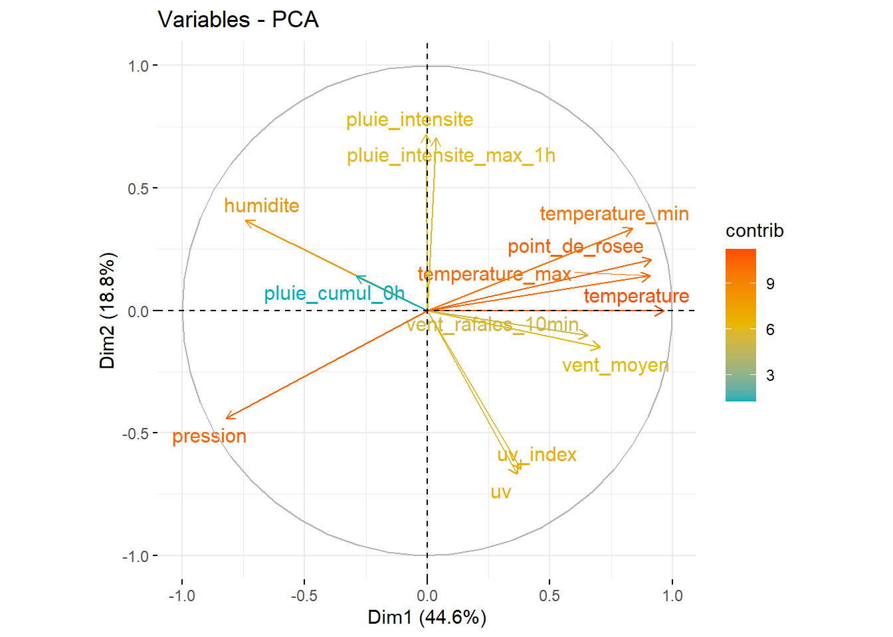
On récupère les dimensions expliquant la plus haute proportion de la variance du jeu de données. On prend les dimensions expliquant minimum 10% de la variance.
fviz_screeplot(res_acp_m, addlabels = TRUE, ylim = c(0, 50))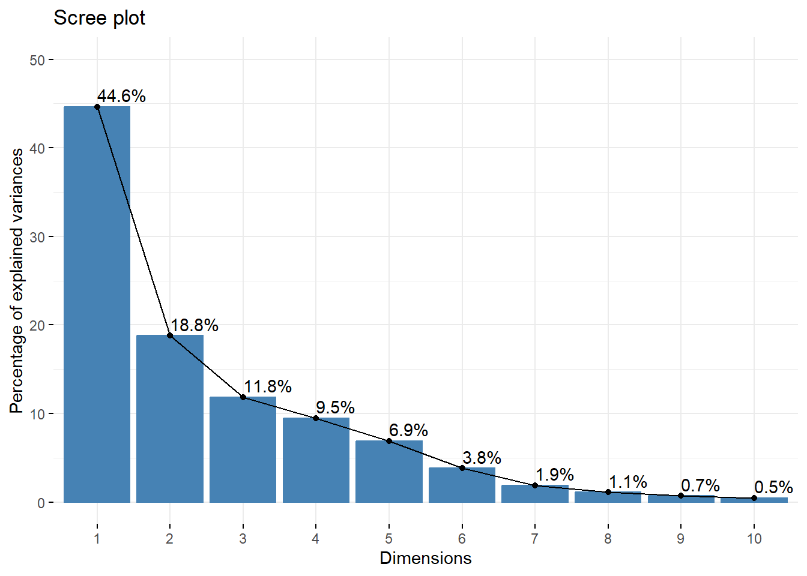
On regarde les variables contribuant aux dimensions 1, 2 et 3 sélectionnées.
c_m1 <- fviz_contrib(res_acp_m, choice = "var", axes = 1, top = 10) +
labs(title = "Dim.1")
c_m2 <- fviz_contrib(res_acp_m, choice = "var", axes = 2, top = 10) +
labs(title = "Dim.2")
c_m3 <- fviz_contrib(res_acp_m, choice = "var", axes = 3, top = 10) +
labs(title = "Dim.3")
(c_m1 | c_m2 | c_m3) + plot_layout(axes = 'collect')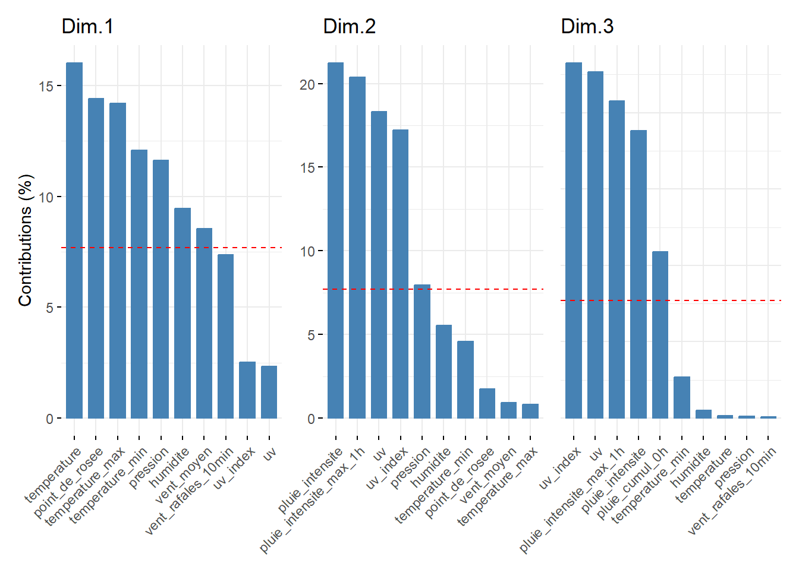
La température, le vent et l’humidité contribuent le plus à dimension 1. Les données de pluviométrie contribuent le plus à la dimension 2. Les données d’ensoleillement contribuent le plus à la dimension 3.
On récupère ensuite les coordonnées de chaque observation sur ces trois dimensions. On a donc 3 indices météorologiques différents.
#on recupere les dimensions 1, 2, 3 de l'acp de meteo
donne_meteo <- res_acp_m$ind$coord
donne_meteo <- as.data.frame(donne_meteo)
donne_meteo <- donne_meteo %>% select(-c(Dim.4, Dim.5))
donne_meteo <- rename(donne_meteo, temperature_vent_humidite = Dim.1)
donne_meteo <- rename(donne_meteo, pluie = Dim.2)
donne_meteo <- rename(donne_meteo, ensoleillement = Dim.3)
donne_meteo <- bind_cols(donne_meteo, meteo$dh_utc)New names:
• `` -> `...4`donne_meteo <- rename(donne_meteo, dh_utc = ...4)
#saveRDS(donne_meteo, file = "output/donne_meteo.rds")Analyse des données comportementales
On essaie maintenant de regrouper des données comportementales en différents indices.
df_numeric_f <- fauvette_uniquement_comportementale[sapply(fauvette_uniquement_comportementale, is.numeric)]
res_acp_f <- PCA(df_numeric_f, scale.unit = TRUE, graph = FALSE)Warning in PCA(df_numeric_f, scale.unit = TRUE, graph = FALSE): Missing values
are imputed by the mean of the variable: you should use the imputePCA function
of the missMDA packagefviz_pca_var(res_acp_f,
col.var = "contrib", # colorer selon la contribution
gradient.cols = c("#00AFBB", "#E7B800", "#FC4E07"),
repel = TRUE)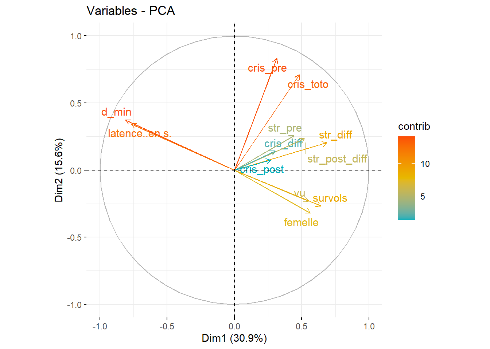
On recupère les dimensions expliquant la plus haute proportion de la variance du jeu de données. On prend les dimensions expliquant le plus de variance
fviz_screeplot(res_acp_f, addlabels = TRUE, ylim = c(0, 50))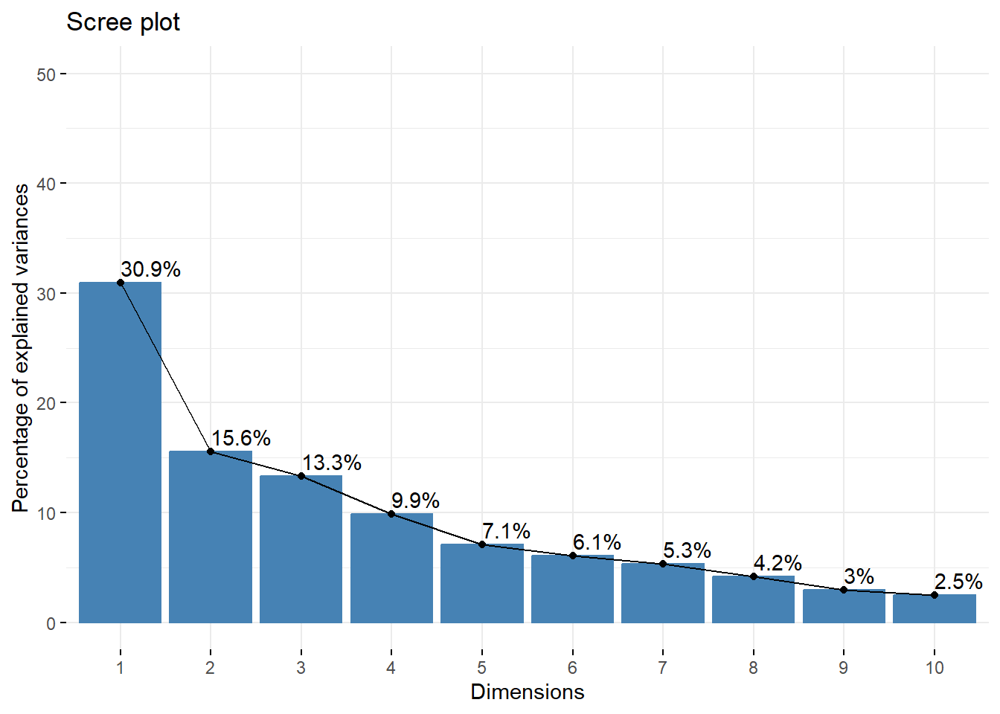
On regarde la structuration des données.
fviz_pca_biplot(res_acp_f, geom = 'point', axes= c(1,2), repel = TRUE,
col.var = "#FC4E07", col.ind = "#00AFBB")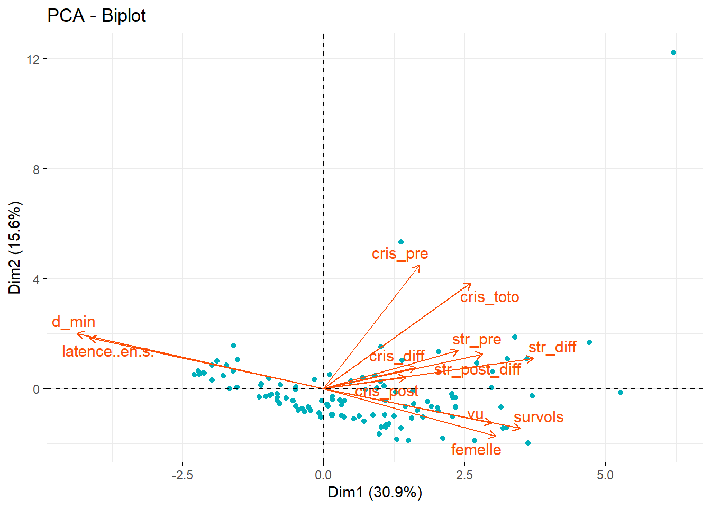
Pour cela, on regarde s’il y a une structure entre les dimensions 3 et 4.
fviz_pca_biplot(res_acp_f, geom = 'point', axes= c(3,4), repel = TRUE,
col.var = "#FC4E07", col.ind = "#00AFBB")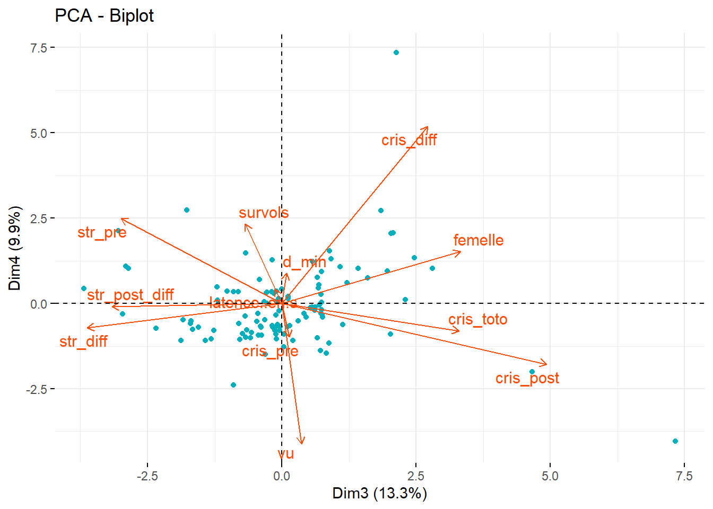
On observe pas un nuage de point circulaire, on observe une structure, on garde donc la dimension 4.
De nouveau, on regarde les variables contribuant aux dimensions sélectionnées.
c_f1 <- fviz_contrib(res_acp_f, choice = "var", axes = 1, top = 10) +
labs(title = "Dim.1")
c_f2 <- fviz_contrib(res_acp_f, choice = "var", axes = 2, top = 10) +
labs(title = "Dim.2")
c_f3 <- fviz_contrib(res_acp_f, choice = "var", axes = 3, top = 10) +
labs(title = "Dim.3")
c_f4 <- fviz_contrib(res_acp_f, choice = "var", axes = 4, top = 10) +
labs(title = "Dim.4")
(c_f1 | c_f2 | c_f3 | c_f4) + plot_layout(axes = 'collect')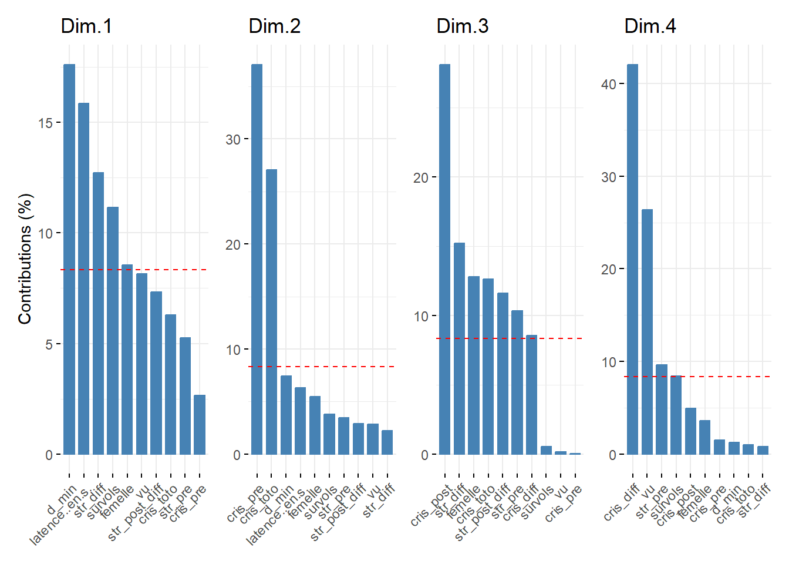
La distance, la latence, les strophes pendant la diffusion et le survol contribuent le plus à dimension 1. Les cris pré-diffusion contribuent le plus à la dimension 2. Les cris post-diffusion, les strophes pendant la diffusion et l’observation de la femelle contribuent le plus à la dimension 3. Les cris pendant la diffusion et les apparitions mâles contribuent le plus à la dimension 4.
On récupère ensuite les coordonnées de chaque observation sur ces quatres dimensions. On a donc 4 indices comportementaux différents. On utilisera surtout l’indice obtenu à partir des coordonnées de la dimension 1 comme indice d’activité principal.
#on recupere les dimensions 1, 2, 3, 4 de l'acp de fauvette
donne_fauvette <- res_acp_f$ind$coord
donne_fauvette <- as.data.frame(donne_fauvette)
donne_fauvette <- donne_fauvette %>% select(-c(Dim.5))
donne_fauvette <- rename(donne_fauvette, dist_lat_strophe_survol = Dim.1)
donne_fauvette <- rename(donne_fauvette, cris_pre = Dim.2)
donne_fauvette <- rename(donne_fauvette, cris_post_stroph_femelle = Dim.3)
donne_fauvette <- rename(donne_fauvette, cris_diff_apparition = Dim.4)
donne_fauvette <- bind_cols(donne_fauvette, fauvette$dh_utc_arrondi)New names:
• `` -> `...5`donne_fauvette <- rename(donne_fauvette, dh_utc_arrondi = ...5)
#saveRDS(donne_fauvette, file = "output/donne_fauvette.rds")On crée un nouveau data frame complet avec nos indices obtenus à partir des ACP pour les paramètres métérologiques et comportementaux et on rajoute les paramètres suivants : l’ID du mâle, les diffusions, l’heure et le jour.
donne_fauvette_meteo <- donne_fauvette %>% left_join(donne_meteo, by = c("dh_utc_arrondi" = "dh_utc"))
donne_fauvette_meteo <- bind_cols(donne_fauvette_meteo, fauvette$ID_male)New names:
• `` -> `...9`donne_fauvette_meteo <- bind_cols(donne_fauvette_meteo, fauvette$Jour)New names:
• `` -> `...10`donne_fauvette_meteo <- bind_cols(donne_fauvette_meteo, fauvette$Minute.AM)New names:
• `` -> `...11`donne_fauvette_meteo <- rename(donne_fauvette_meteo, ID_male = ...9)
donne_fauvette_meteo <- rename(donne_fauvette_meteo, Jour = ...10)
donne_fauvette_meteo <- rename(donne_fauvette_meteo, Minute.AM = ...11)
donne_fauvette_meteo <- donne_fauvette_meteo %>% mutate(ID_male = as.factor(ID_male))
donne_fauvette_meteo <- bind_cols(donne_fauvette_meteo, fauvette$diff)New names:
• `` -> `...12`donne_fauvette_meteo <- bind_cols(donne_fauvette_meteo, fauvette$type_diff)New names:
• `` -> `...13`donne_fauvette_meteo <- rename(donne_fauvette_meteo, diff = ...12)
donne_fauvette_meteo <- rename(donne_fauvette_meteo, type_diff = ...13)
#saveRDS(donne_fauvette_meteo, file = "output/donne_fauvette_meteo.rds")I.2. Etude de la corrélation entre les indices comportementaux et des facteurs temporels et environnementaux
On fait maintenant une ACP avec les indices météorologiques et comportementaux définis plus tôt avec les variables temporelles (heure et jour)
df_numeric_t <- donne_fauvette_meteo[sapply(donne_fauvette_meteo, is.numeric)]
res_acp_t <- PCA(df_numeric_t, scale.unit = TRUE, graph = FALSE)
fviz_pca_var(res_acp_t,
col.var = "contrib", # colorer selon la contribution
gradient.cols = c("#00AFBB", "#E7B800", "#FC4E07"),
repel = TRUE)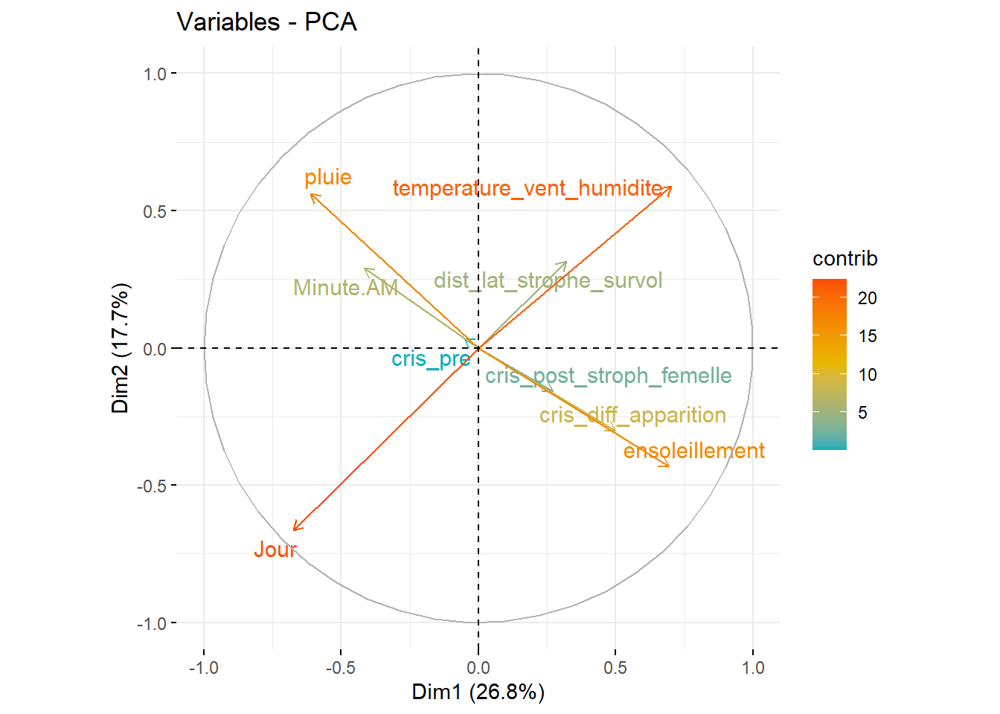
On voulait tracer la température en fonction du temps.
meteo %>% ggplot(aes(x=dh_utc, y = temperature))+
geom_point()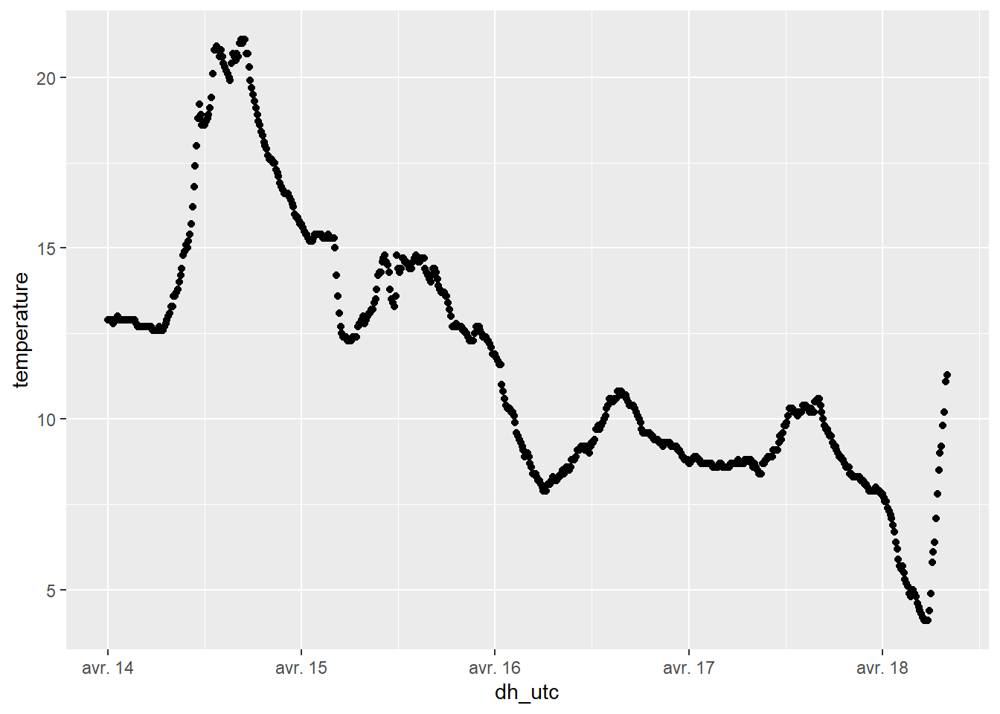
On regarde les dimensions expliquant la plus haute proportion de la variance du jeu de données. On prend les dimensions expliquant le plus de variance.
fviz_screeplot(res_acp_t, addlabels = TRUE, ylim = c(0, 50))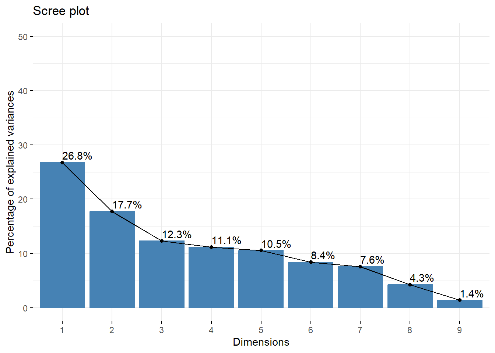
On remarque qu’il y a 5 dimensions expliquant plus de 10% de la variance. On analyse par biplot s’il y a une structuration entre ces dimensions.
bp_t12 <- fviz_pca_biplot(res_acp_t, geom = 'point', axes= c(1,2), repel = TRUE,
col.var = "#FC4E07", col.ind = "#00AFBB")
bp_t23 <- fviz_pca_biplot(res_acp_t, geom = 'point', axes= c(2,3), repel = TRUE,
col.var = "#FC4E07", col.ind = "#00AFBB")
bp_t34 <- fviz_pca_biplot(res_acp_t, geom = 'point', axes= c(3,4), repel = TRUE,
col.var = "#FC4E07", col.ind = "#00AFBB")
(bp_t12 | bp_t23 | bp_t34)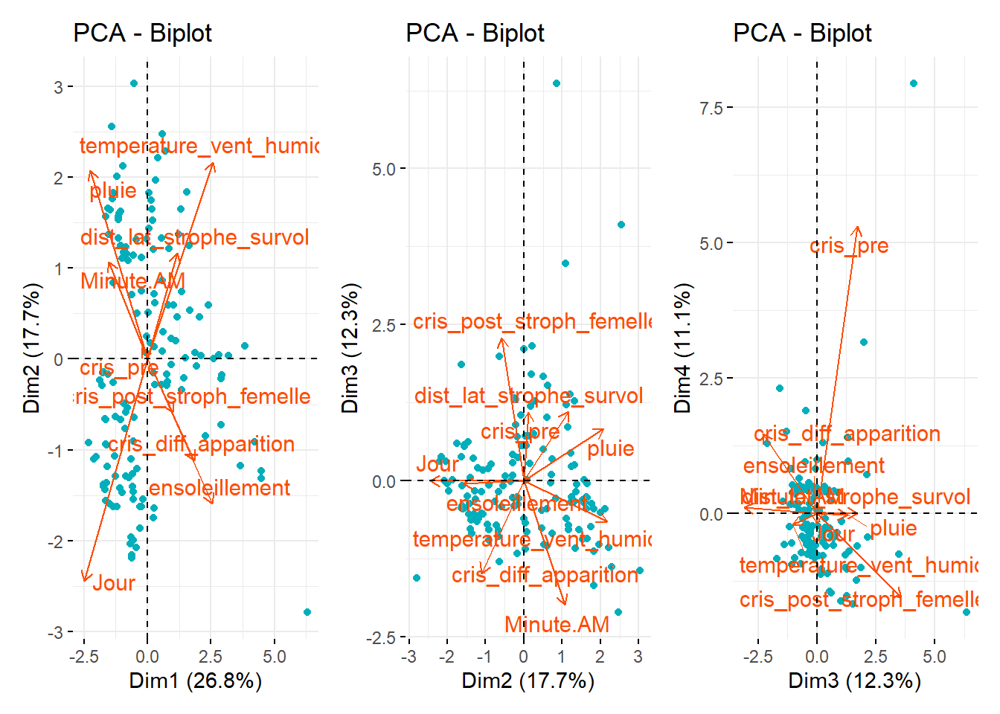
On remarque 2 groupes de points dans les dimensions 1 et 2. Pour 2 et 3, on distingue encore deux groupes, mais on n’en distingue pas pour 3 et 4.
On regarde de quoi sont composées les dimensions.
c_t1 <- fviz_contrib(res_acp_t, choice = "var", axes = 1, top = 10) +
labs(title = "Dim.1")
c_t2 <- fviz_contrib(res_acp_t, choice = "var", axes = 2, top = 10) +
labs(title = "Dim.2")
c_t3 <- fviz_contrib(res_acp_t, choice = "var", axes = 3, top = 10) +
labs(title = "Dim.3")
(c_t1 | c_t2 | c_t3) + plot_layout(axes = 'collect')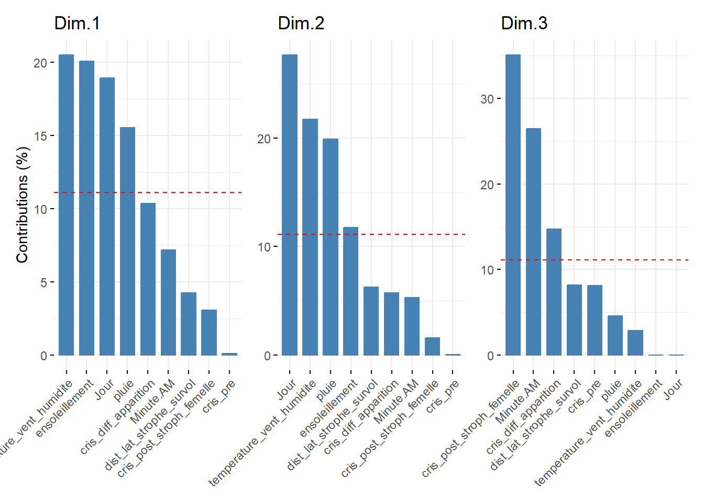
Les deux premières dimensions sont principalement expliquées par des données environnementales. On remarque tout de même qu’il semble il y avoir une corrélation entre l’heure (minute.AM) et l’intensité des cris ainsi que l’apparition des mâles, on ira donc plus loin dans cette analyse ultérieurement. De même, on remarque avec la dimension 3 qu’il semble y avoir une corrélation entre notre indice d’activité et l’heure de la journée.
I.3. Between-Class Analysis et test de Monte Carlo
On fait maintenant une BCA pour étudier l’influence des facteurs catégoriels sur la variance du jeu de données.
pc <- dudi.pca(df_numeric_t, scannf = FALSE, nf = 9)Regroupement selon le type de diffusion
bca_typediff <- bca(pc,as.factor(donne_fauvette_meteo$type_diff), scannf = FALSE, nf = 5)
bca_typediffBetween analysis
call: bca.dudi(x = pc, fac = as.factor(donne_fauvette_meteo$type_diff),
scannf = FALSE, nf = 5)
class: between dudi
$nf (axis saved) : 5
$rank: 5
$ratio: 0.04142587
eigen values: 0.2181 0.07894 0.05025 0.01754 0.00796
vector length mode content
1 $eig 5 numeric eigen values
2 $lw 6 numeric group weigths
3 $cw 9 numeric col weigths
data.frame nrow ncol content
1 $tab 6 9 array class-variables
2 $li 6 5 class coordinates
3 $l1 6 5 class normed scores
4 $co 9 5 column coordinates
5 $c1 9 5 column normed scores
6 $ls 145 5 row coordinates
7 $as 9 5 inertia axis onto between axiss.class(pc$li, as.factor(donne_fauvette_meteo$type_diff), xlim = c(-4, 5.5), ylim = c(-2.5, 3), col = TRUE, main = "Regroupement selon les type de diffusions par BCA")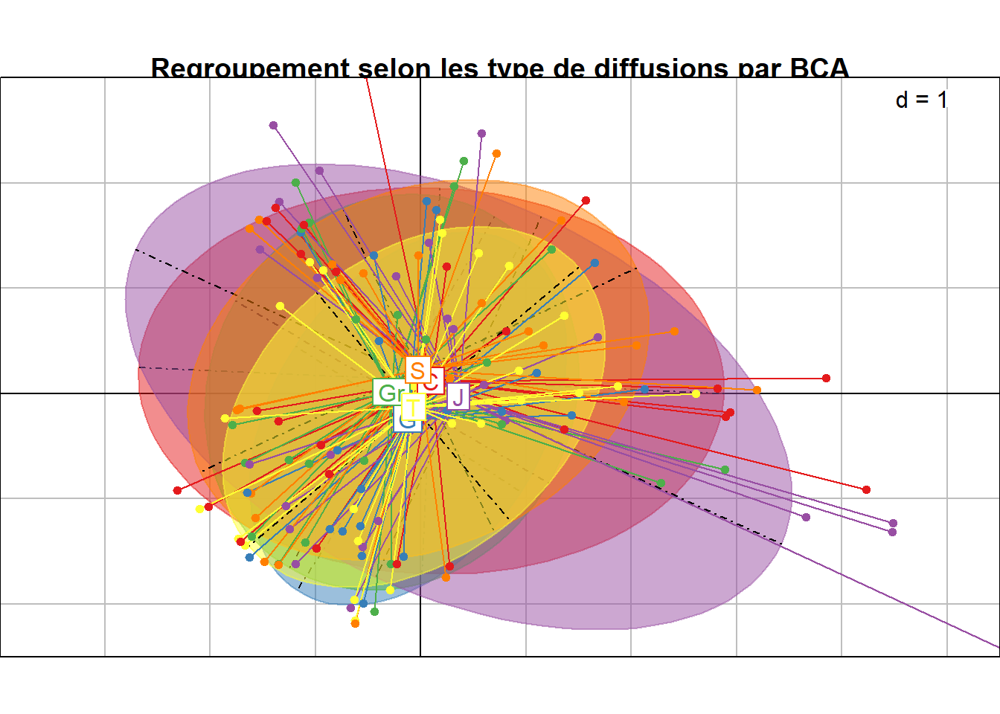
Pour savoir si les variances expliquées sont significatives, on réalise un test de Monte-Carlo.
rand_tdiff <- randtest(bca(pc, as.factor(donne_fauvette_meteo$type_diff), scannf = FALSE, nf = 9), 999)
plot(rand_tdiff, main = "Monte-Carlo test pour les types de diffusions")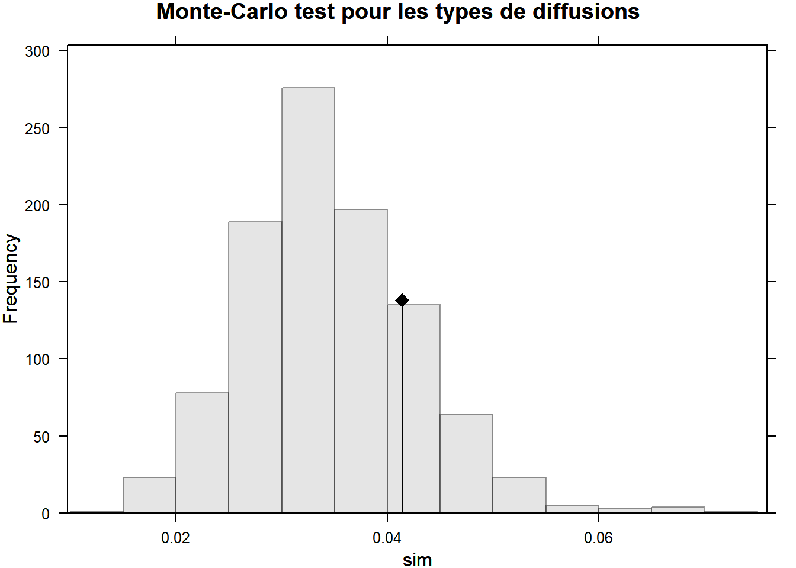
rand_tdiffMonte-Carlo test
Call: randtest.between(xtest = bca(pc, as.factor(donne_fauvette_meteo$type_diff),
scannf = FALSE, nf = 9), nrepet = 999)
Observation: 0.04142587
Based on 999 replicates
Simulated p-value: 0.193
Alternative hypothesis: greater
Std.Obs Expectation Variance
8.227317e-01 3.470213e-02 6.678893e-05 La BCA nous indique que le type de diffusion explique 4% de la variance du jeu de données. Le test de Monte-Carlo nous indique que le poids du type de diffusion sur la variance est non significative.
Regroupement selon le son diffusé
Ce test permet de prendre en compte la variabilité intra-son.
bca_diff <- bca(pc,as.factor(donne_fauvette_meteo$diff), scannf = FALSE, nf = 9)
bca_diffBetween analysis
call: bca.dudi(x = pc, fac = as.factor(donne_fauvette_meteo$diff),
scannf = FALSE, nf = 9)
class: between dudi
$nf (axis saved) : 9
$rank: 9
$ratio: 0.1493004
eigen values: 0.3998 0.2804 0.1947 0.1505 0.1095 ...
vector length mode content
1 $eig 9 numeric eigen values
2 $lw 24 numeric group weigths
3 $cw 9 numeric col weigths
data.frame nrow ncol content
1 $tab 24 9 array class-variables
2 $li 24 9 class coordinates
3 $l1 24 9 class normed scores
4 $co 9 9 column coordinates
5 $c1 9 9 column normed scores
6 $ls 145 9 row coordinates
7 $as 9 9 inertia axis onto between axiss.class(pc$li, as.factor(donne_fauvette_meteo$diff), xlim = c(-4, 5.5), ylim = c(-3.5, 3), col = TRUE, main = "Regroupement selon les diffusions par BCA")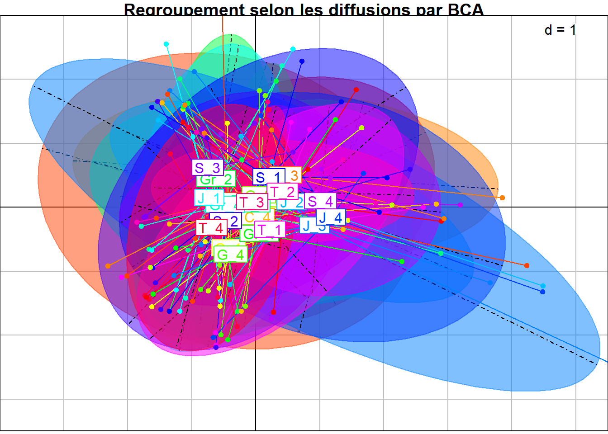
Pour savoir si les variances expliquées sont significatives, on réalise un test de Monte-Carlo.
rand_diff <- randtest(bca(pc, as.factor(donne_fauvette_meteo$diff), scannf = FALSE, nf = 9), 999)
plot(rand_diff, main = "Monte-Carlo test pour les diffusions")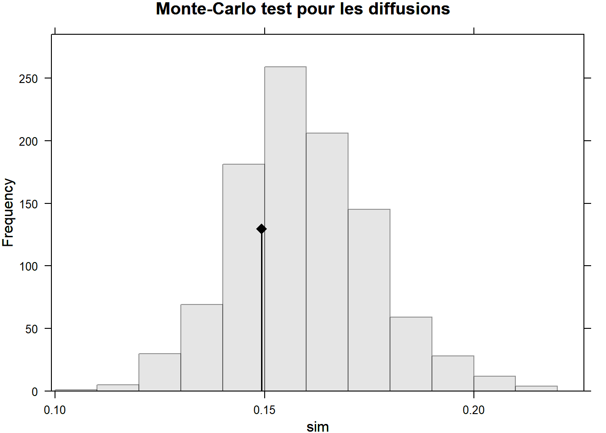
rand_diffMonte-Carlo test
Call: randtest.between(xtest = bca(pc, as.factor(donne_fauvette_meteo$diff),
scannf = FALSE, nf = 9), nrepet = 999)
Observation: 0.1493004
Based on 999 replicates
Simulated p-value: 0.727
Alternative hypothesis: greater
Std.Obs Expectation Variance
-0.6045812491 0.1593530709 0.0002764715 La BCA nous indique que les diffusions expliquent 15% de la variance du jeu de données. Le test de Monte-Carlo nous indique que le poids des diffusions sur la variance est non significative. Le fait que la variance soit beaucoup plus grande en ne regroupant pas les sons par types, nous laisse penser qu’il existe une variabiltié intra-son, nous étudirons cela ultérieurement.
Regroupement selon l’ID du mâle
donne_IDmftf <- donne_fauvette_meteo %>%
filter(!ID_male %in% c("5", "6"))
df_numeric_t_IDm <- donne_IDmftf[sapply(donne_IDmftf, is.numeric)]
pc_IDm <- dudi.pca(df_numeric_t_IDm, scannf = FALSE, nf = 9)
bca_ID_male <- bca(pc_IDm, factor(donne_IDmftf$ID_male, levels = c("1", "2", "3", "4", "7")), scannf = FALSE, nf = 9)
bca_ID_maleBetween analysis
call: bca.dudi(x = pc_IDm, fac = factor(donne_IDmftf$ID_male, levels = c("1",
"2", "3", "4", "7")), scannf = FALSE, nf = 9)
class: between dudi
$nf (axis saved) : 4
$rank: 4
$ratio: 0.03318499
eigen values: 0.1598 0.07909 0.05537 0.004429
vector length mode content
1 $eig 4 numeric eigen values
2 $lw 5 numeric group weigths
3 $cw 9 numeric col weigths
data.frame nrow ncol content
1 $tab 5 9 array class-variables
2 $li 5 4 class coordinates
3 $l1 5 4 class normed scores
4 $co 9 4 column coordinates
5 $c1 9 4 column normed scores
6 $ls 136 4 row coordinates
7 $as 9 4 inertia axis onto between axiss.class(pc_IDm$li, factor(donne_IDmftf$ID_male, levels = c("1", "2", "3", "4", "7")), xlim = c(-3.5, 4), ylim = c(-3, 3), col = TRUE, main = "Regroupement selon l'ID du mâle par BCA")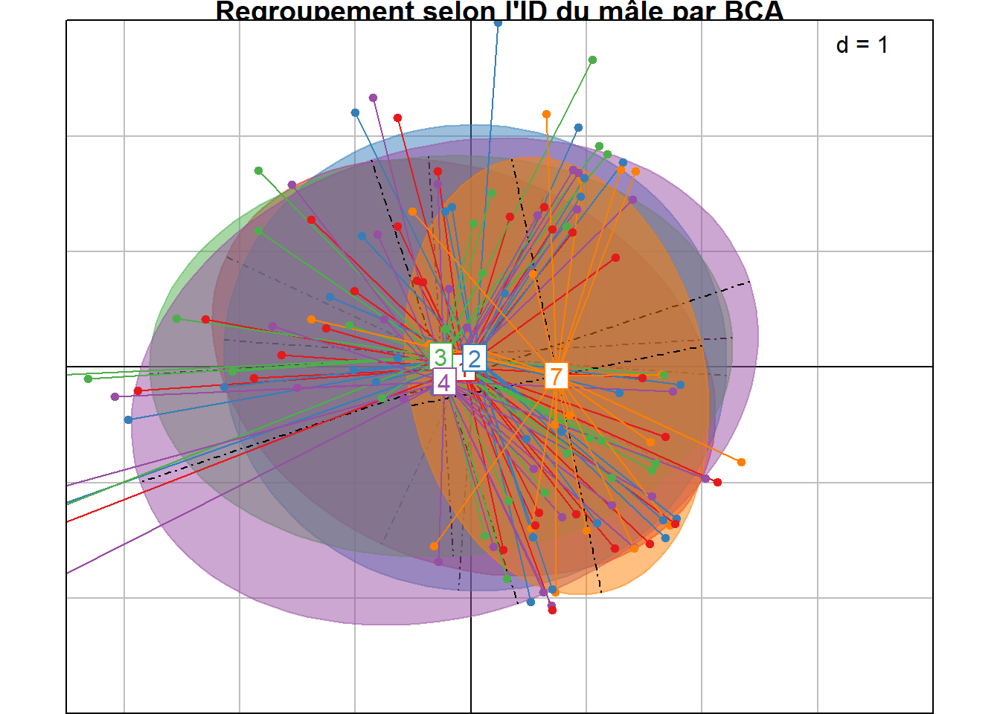
Pour savoir si les variances expliquées sont significatives, on réalise un test de Monte-Carlo.
rand_IDm <- randtest(bca(pc_IDm, factor(donne_IDmftf$ID_male, levels = c("1", "2", "3", "4", "7")), scannf = FALSE, nf = 9), 999)
plot(rand_IDm, main = "Monte-Carlo test pour l'ID mâle")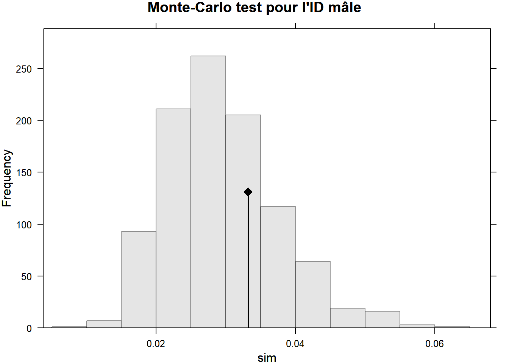
rand_IDmMonte-Carlo test
Call: randtest.between(xtest = bca(pc_IDm, factor(donne_IDmftf$ID_male,
levels = c("1", "2", "3", "4", "7")), scannf = FALSE, nf = 9),
nrepet = 999)
Observation: 0.03318499
Based on 999 replicates
Simulated p-value: 0.287
Alternative hypothesis: greater
Std.Obs Expectation Variance
4.716368e-01 2.943941e-02 6.307004e-05 La BCA nous indique que les diffusions expliquent 3% de la variance du jeu de données. Le test de Monte-Carlo nous indique que le poids de l’ID du mâle sur la variance est non significative. Cependant, on semble observer une activité différente pour le mâle n°7.
Regroupement selon la journée d’échantillonage
Les conditions d’échantillonnage étaient différentes entre les journées d’échantillonnage. Pour tester l’effet seul de la journée d’échantillonnage, on refait une ACP sans ce facteur, puis on réalise la BCA.
pc_sansJour <- df_numeric_t |> select(-c(Jour)) |> dudi.pca(scannf = FALSE, nf = 9)
bca_jour <- bca(pc_sansJour,as.factor(donne_fauvette_meteo$Jour), scannf = FALSE, nf = 9)
bca_jourBetween analysis
call: bca.dudi(x = pc_sansJour, fac = as.factor(donne_fauvette_meteo$Jour),
scannf = FALSE, nf = 9)
class: between dudi
$nf (axis saved) : 3
$rank: 3
$ratio: 0.2332126
eigen values: 1.034 0.7234 0.1087
vector length mode content
1 $eig 3 numeric eigen values
2 $lw 4 numeric group weigths
3 $cw 8 numeric col weigths
data.frame nrow ncol content
1 $tab 4 8 array class-variables
2 $li 4 3 class coordinates
3 $l1 4 3 class normed scores
4 $co 8 3 column coordinates
5 $c1 8 3 column normed scores
6 $ls 145 3 row coordinates
7 $as 8 3 inertia axis onto between axisLe jour explique 23% de la variance!! On visualise donc la BCA.
s.class(pc_sansJour$li, as.factor(df_numeric_t$Jour), xlim = c(-5, 3), ylim = c(-2.5, 3), col = TRUE, main = "Regroupement selon le jour par BCA")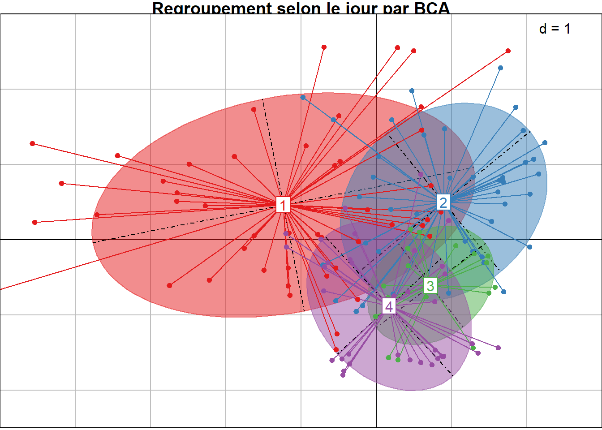
On fait un test de Monte-Carlo.
rand_jour <- randtest(bca(pc_sansJour, as.factor(df_numeric_t$Jour), scannf = FALSE, nf = 9), 999)
plot(rand_jour, main = "Monte-Carlo test pour le jour")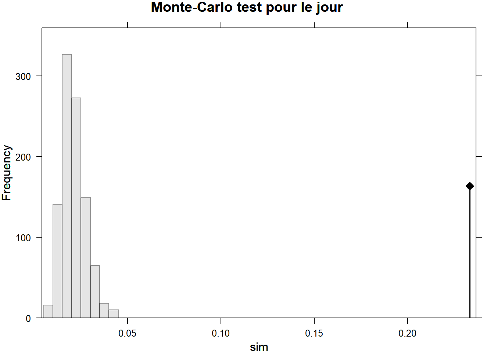
rand_jourMonte-Carlo test
Call: randtest.between(xtest = bca(pc_sansJour, as.factor(df_numeric_t$Jour),
scannf = FALSE, nf = 9), nrepet = 999)
Observation: 0.2332126
Based on 999 replicates
Simulated p-value: 0.001
Alternative hypothesis: greater
Std.Obs Expectation Variance
3.372063e+01 2.102142e-02 3.959710e-05 Le test de Monte-Carlo nous indique que l’influence de la journée sur la variabilité des données est significative.
II. Questions biologiques posées
II.1. Définition d’un indice de dépense énergétique
L’indice comprend les cris et les strophes pendant et après la diffusion ainsi que les survols. Selon la biblio, un vol de 2s reviendrait à un coût énergétique d’environ 15J, un chant de rouge-gorge de 600s reviendrait à 100J soit environ 0.8J pour un chant de 5s, un cri serait négligeable mais pour la prise en compte dans l’indice, nous avons considéré comme si c’était un chant court (0.2s et donc environ 0.04J). On a donc indicé le cri à 1, le chant à 25, le survol à 250.
Tous les intervalles de confiance sont calculés de la manière suivante : moyenne +/- 1.96*écart_type/sqrt(effectif)
# création d'une colonne indice energie
donne$indice_energy <- donne$cris_diff + donne$cris_post + 250 * donne$survols + 25 * (donne$str_diff + donne$str_post_diff)II.2. Quelle est l’influence de l’heure de la journée sur l’activité des fauvettes ?
Sans estimation en 2025
#formation des classes horaires
breaks <- seq(480, 1020, by = 60)
labels_heure <- paste0(breaks[-length(breaks)]/60, "h-", breaks[-1]/60, "h")
donne$heure_cat <- cut(donne$Minute.AM,
breaks = breaks,
labels = labels_heure,
include.lowest = TRUE)
#plot de l'indice énergétique par rapport à la classe horaire
ggplot(donne, aes(x = heure_cat, y = indice_energy)) +
stat_summary(fun = mean, geom = "bar", fill = "tomato", alpha = 0.8) +
labs(title = "Énergie moyenne par tranche de 1 heure",
x = "Heures",
y = "Indice d'énergie (moyenne)") +
theme_minimal() +
theme(axis.text.x = element_text(angle = 45, hjust = 1))Warning: Removed 13 rows containing non-finite outside the scale range
(`stat_summary()`).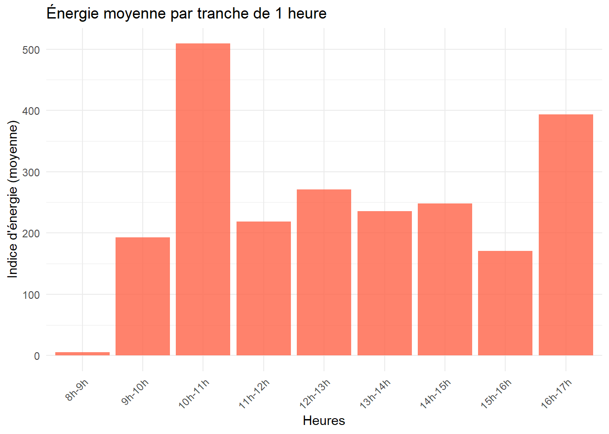
Pour rappel, le premier jour nous n’avions pas séparer les cris, on a donc estimé le détail des cris par rapport aux proportions des cris de tout le jeu de données (en prenant en compte le type de diffusion). Attention, les estimations provenant de moyennes perdent la variabilité des résultats, il faut donc en prendre compte lors de l’analyse.
Sifflements : Avant-diffusion : 0% Pendant 53.8% Après 46.2%
Jardin : 24.82% 35.6% 39.58%
Grisette : 23.4% 57.16% 19.45%
Témoin : 0% 50% 50%
Gazouillis : 3.05% 62.25% 34.7%
Connaissant les cris totaux et les proportions moyennes on peut calculer le détail.
Avec estimation en 2025
#formation des classes horaires
breaks <- seq(420, 1020, by = 60)
labels_heure <- paste0(breaks[-length(breaks)]/60, "h-", breaks[-1]/60, "h")
#coloration du jeu de données avec estimation
donne_estim$color_group <- ifelse(donne_estim$heure_cat == "8h-9h", "avec estimation", "sans estimation")
#catégories horaires
donne_estim$heure_cat <- cut(donne_estim$Minute.AM,
breaks = breaks,
labels = labels_heure,
include.lowest = TRUE)
#plot avec les estimations en plus
ggplot(donne_estim) +
stat_summary(aes(x = heure_cat, y = indice_energy, fill = color_group), fun = mean, geom = "bar", alpha = 0.8) +
stat_summary(aes(x = heure_cat, y = indice_energy, fill = color_group), fun.data = mean_cl_normal, geom = "errorbar", width = 0.2) +
geom_text(
data = data.frame(
"x" = c("8h-9h","9h-10h","10h-11h","11h-12h","12h-13h","13h-14h","14h-15h","15h-16h","16h-17h"),
"y" = c(410,525,830,450,590,450,420,300,710),
"label" = c("a","a","b","ns","ns","a","a","a","ns")
),
aes(x = x, y = y, label = label),
size = 3
) +
scale_fill_manual(
values = c("avec estimation" = "darkblue", "sans estimation" = "tomato")
) +
labs(
title = "Indice d'énergie moyenne par tranche de 1 heure",
x = "Heures",
y = "Indice d'énergie (moyenne)"
) +
theme_minimal() +
theme(axis.text.x = element_text(angle = 45, hjust = 1))Warning in stat_summary(aes(x = heure_cat, y = indice_energy, fill =
color_group), : Ignoring unknown aesthetics: fill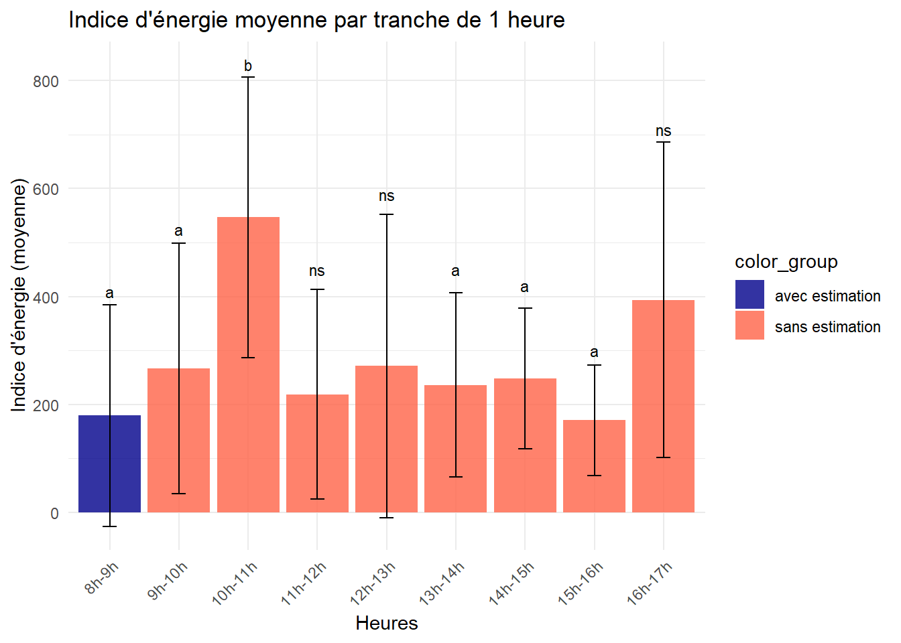
# mean_cl_normal considère la distrib comme normale et moy+/-1.96*ecarttype/sqrt(n)--> 1.96 car student à 95%modèle linéaire (paramétrique)
#modification des references pour tester les différences entre les intervales
#modifier la classe horaire de ref pour voir avec quoi c'est significativement différent
donne_estim$heure_cat <- relevel(donne_estim$heure_cat, ref = "10h-11h")
model <- lm(indice_energy ~ heure_cat , data = donne_estim )
summary(model)
Call:
lm(formula = indice_energy ~ heure_cat, data = donne_estim)
Residuals:
Min 1Q Median 3Q Max
-546.8 -242.2 -162.8 217.8 1661.4
Coefficients:
Estimate Std. Error t value Pr(>|t|)
(Intercept) 546.82 95.44 5.730 6.19e-08 ***
heure_cat8h-9h -367.66 148.36 -2.478 0.01443 *
heure_cat9h-10h -279.66 133.08 -2.101 0.03745 *
heure_cat11h-12h -328.16 162.21 -2.023 0.04503 *
heure_cat12h-13h -275.68 176.71 -1.560 0.12108
heure_cat13h-14h -310.93 133.08 -2.336 0.02093 *
heure_cat14h-15h -299.01 127.07 -2.353 0.02005 *
heure_cat15h-16h -376.03 124.74 -3.015 0.00307 **
heure_cat16h-17h -153.21 133.08 -1.151 0.25164
---
Signif. codes: 0 '***' 0.001 '**' 0.01 '*' 0.05 '.' 0.1 ' ' 1
Residual standard error: 393.5 on 136 degrees of freedom
Multiple R-squared: 0.08455, Adjusted R-squared: 0.0307
F-statistic: 1.57 on 8 and 136 DF, p-value: 0.1393Résidus gaussiens ?
hist(residuals((model)) , breaks = 40)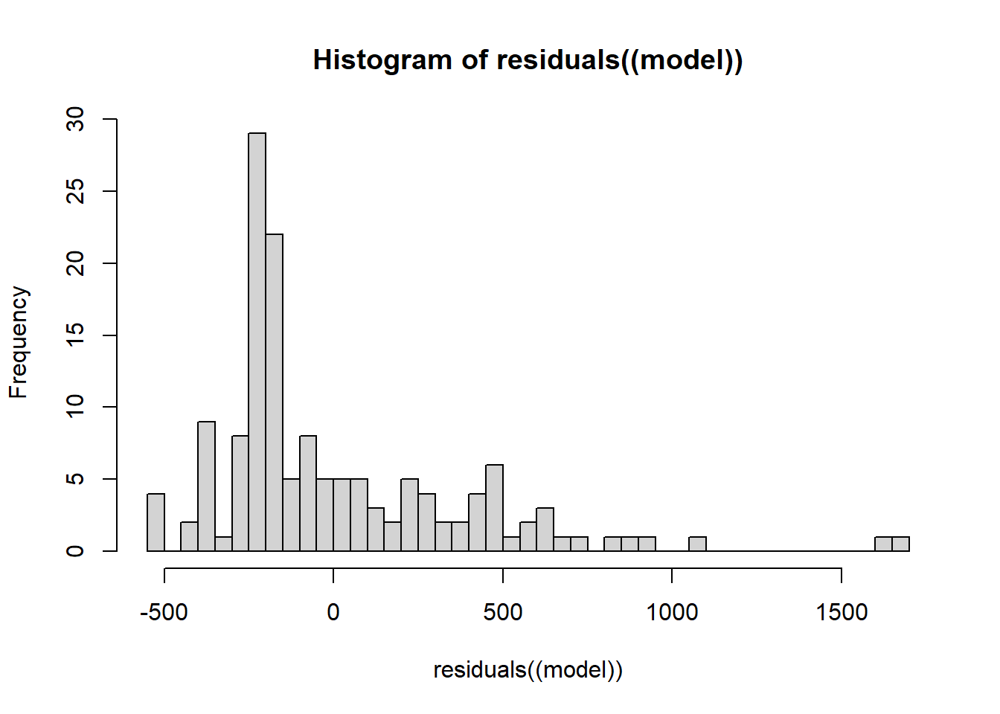
Il semblerait qu’il y ait une distribution pseudo-normale
Vérification de la loi gaussienne 1
plot(model , which = 2)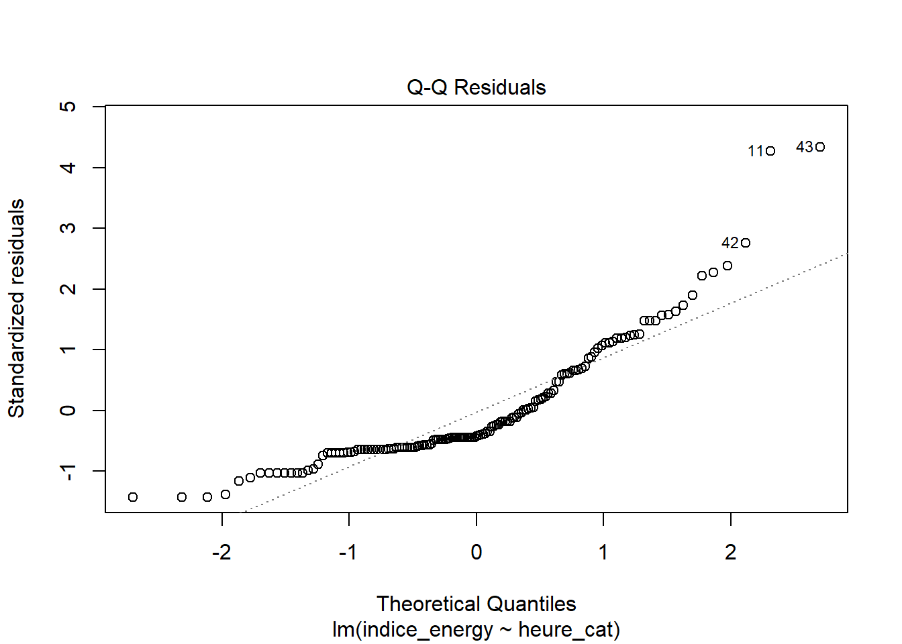
QQ plot pas terrible
Homoscédasticité ?
check_heteroskedasticity(model)Warning: Heteroscedasticity (non-constant error variance) detected (p < .001).Visiblement pas homoscédastique, les hypothèses ne sont pas validées.
test non paramétrique
kruskal.test(indice_energy ~ heure_cat, data = donne_estim)
Kruskal-Wallis rank sum test
data: indice_energy by heure_cat
Kruskal-Wallis chi-squared = 10.015, df = 8, p-value = 0.264Pas de différence d’après le test de Kruskal-Wallis
#dunn test pour comparer deux à deux les résultats
dunn_test(data=donne_estim , indice_energy ~ heure_cat)# A tibble: 36 × 9
.y. group1 group2 n1 n2 statistic p p.adj p.adj.signif
* <chr> <chr> <chr> <int> <int> <dbl> <dbl> <dbl> <chr>
1 indice_energy 10h-11h 8h-9h 17 12 -2.36 0.0183 0.641 ns
2 indice_energy 10h-11h 9h-10h 17 18 -1.86 0.0623 1 ns
3 indice_energy 10h-11h 11h-1… 17 9 -1.14 0.255 1 ns
4 indice_energy 10h-11h 12h-1… 17 7 -0.877 0.380 1 ns
5 indice_energy 10h-11h 13h-1… 17 18 -2.27 0.0235 0.799 ns
6 indice_energy 10h-11h 14h-1… 17 22 -2.13 0.0333 1 ns
7 indice_energy 10h-11h 15h-1… 17 24 -2.74 0.00605 0.218 ns
8 indice_energy 10h-11h 16h-1… 17 18 -1.65 0.0985 1 ns
9 indice_energy 8h-9h 9h-10h 12 18 0.695 0.487 1 ns
10 indice_energy 8h-9h 11h-1… 12 9 0.952 0.341 1 ns
# ℹ 26 more rowsDonc, d’après les résutlats du Dunn-test et du modèle linéaire, 10h-11h est significativement différent de 8h-10h et 13h-16h. Les résultats provenant de tests différents, les conclusions sont robustes, il y a donc un pic d’activité de réponses des fauvettes à têtes noires entre 10h et 11h.
Impact sur l’indice énergétique global inter-année
Création nouvel indice
Les autres années n’ayant pas le détail des cris ni les strophes pendant la diffusion, le calcul se fait avec tout le reste en se basant sur les mêmes facteurs multiplicatifs.
table_birds_2024 <- read_csv("table_birds_2024.csv")Rows: 185 Columns: 23
── Column specification ────────────────────────────────────────────────────────
Delimiter: ","
chr (2): DIFFUSION, MEMO
dbl (19): ID_MALE, VU, DIFFUSION_SOUS_TYPE, SESSION_DIFF, SESSION_TYPE, SES...
date (1): JOUR
time (1): HEURE
ℹ Use `spec()` to retrieve the full column specification for this data.
ℹ Specify the column types or set `show_col_types = FALSE` to quiet this message.table_birds_2023 <- read_csv("table_birds_2023.csv")Rows: 192 Columns: 23
── Column specification ────────────────────────────────────────────────────────
Delimiter: ","
chr (2): DIFFUSION, MEMO
dbl (20): JOUR, ID_MALE, VU, DIFFUSION_SOUS_TYPE, SESSION_DIFF, SESSION_TYP...
time (1): HEURE
ℹ Use `spec()` to retrieve the full column specification for this data.
ℹ Specify the column types or set `show_col_types = FALSE` to quiet this message.#indice energy 2025 sans strophes diff car les autres années ne l'ont pas....
donne_estim$indice_energy_global <- donne_estim$cris_toto + 250 * donne_estim$survols + 25 * (donne_estim$str_post_diff + donne_estim$str_pre)
#indice energy 2024
table_birds_2024$indice_energy_global <- table_birds_2024$CRIS + 250 * table_birds_2024$SURVOLS + 25 * (table_birds_2024$STROPHES_AVANT + table_birds_2024$STROPHES_APRES)
#indice energy 2023
table_birds_2023$indice_energy_global <- table_birds_2023$CRIS + 250 * table_birds_2023$SURVOLS + 25 * (table_birds_2023$STROPHES_APRES + table_birds_2023$STROPHES_AVANT)
table_birds_2024$HEURE <- hms::as_hms(table_birds_2024$HEURE)
table_birds_2023$HEURE <- hms::as_hms(table_birds_2023$HEURE)
# Conversion en minutes
table_birds_2024$minutes <- hour(table_birds_2024$HEURE) * 60 + minute(table_birds_2024$HEURE)
table_birds_2023$minutes <- hour(table_birds_2023$HEURE) * 60 + minute(table_birds_2023$HEURE)
# création des caté d'heures
table_birds_2024$heure_cat <- cut(table_birds_2024$minutes,
breaks = breaks,
labels = labels_heure,
include.lowest = TRUE)
table_birds_2023$heure_cat <- cut(table_birds_2023$minutes,
breaks = breaks,
labels = labels_heure,
include.lowest = TRUE)
# création d'un tableau commun à tous
tableau_global <- bind_rows(
table_birds_2023 %>% select(c(indice_energy_global, heure_cat)),
table_birds_2024 %>% select(c(indice_energy_global, heure_cat)),
donne_estim %>% select(c(indice_energy_global, heure_cat))
)
View(tableau_global)
tableau_global<-na.omit(tableau_global)
# création du graph combiné des années
ggplot(tableau_global, aes(x = heure_cat, y = indice_energy_global)) +
stat_summary(fun = mean, geom = "bar", alpha = 0.8) + stat_summary(fun.data = mean_cl_normal, geom = "errorbar", width = 0.2) +geom_text(
data = data.frame(
"x" = c("7h-8h","8h-9h","9h-10h","10h-11h","11h-12h","12h-13h","13h-14h","14h-15h","15h-16h","16h-17h"),
"y" = c(485,340,450,450,370,425,365,235,210,320),
"label" = c("a-c","ns","a","a","ns","ns","ns","b","b","b-c")
),
aes(x = x, y = y, label = label),
size = 3
) + labs(title = "Indice d'énergie globale par tranche de 1 heure",
x = "Tranche horaire",
y = "Indice d'énergie globale (moyenne)") +
theme_minimal() +
theme(axis.text.x = element_text(angle = 45, hjust = 1))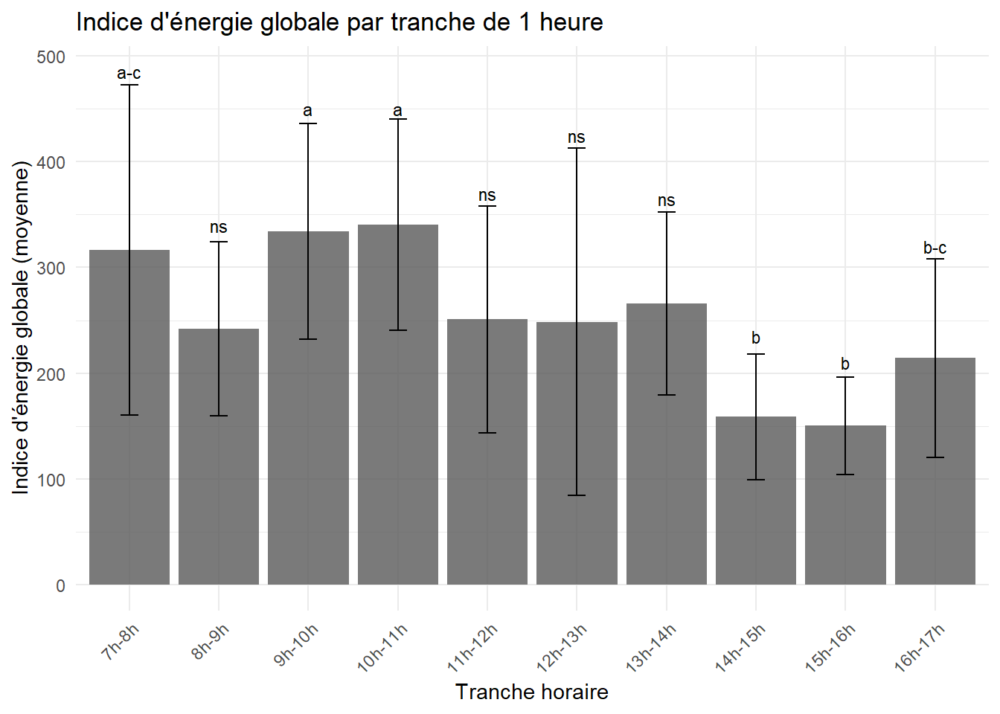
modèle linéaire (paramétrique) 2
#modification des references pour tester les différences entre les intervales
tableau_global$heure_cat <- relevel(tableau_global$heure_cat, ref = "9h-10h")
model3 <- lm(indice_energy_global ~ heure_cat , data = tableau_global )
summary(model3)
Call:
lm(formula = indice_energy_global ~ heure_cat, data = tableau_global)
Residuals:
Min 1Q Median 3Q Max
-340.2 -225.0 -139.9 124.6 1615.7
Coefficients:
Estimate Std. Error t value Pr(>|t|)
(Intercept) 334.051 42.413 7.876 2.06e-14 ***
heure_cat7h-8h -17.551 87.722 -0.200 0.84150
heure_cat8h-9h -92.421 61.354 -1.506 0.13260
heure_cat10h-11h 6.168 58.798 0.105 0.91650
heure_cat11h-12h -83.096 64.892 -1.281 0.20095
heure_cat12h-13h -85.479 96.850 -0.883 0.37787
heure_cat13h-14h -68.004 58.798 -1.157 0.24799
heure_cat14h-15h -175.237 57.577 -3.044 0.00246 **
heure_cat15h-16h -183.690 57.210 -3.211 0.00141 **
heure_cat16h-17h -119.763 59.981 -1.997 0.04639 *
---
Signif. codes: 0 '***' 0.001 '**' 0.01 '*' 0.05 '.' 0.1 ' ' 1
Residual standard error: 325.8 on 508 degrees of freedom
Multiple R-squared: 0.04246, Adjusted R-squared: 0.0255
F-statistic: 2.503 on 9 and 508 DF, p-value: 0.008291Vérification des hypothèses
hist(residuals((model3)) , breaks = 40)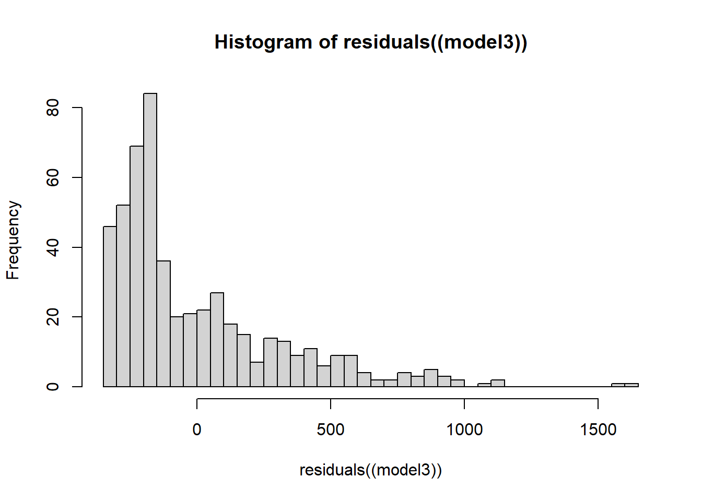
plot(model3 , which = 2)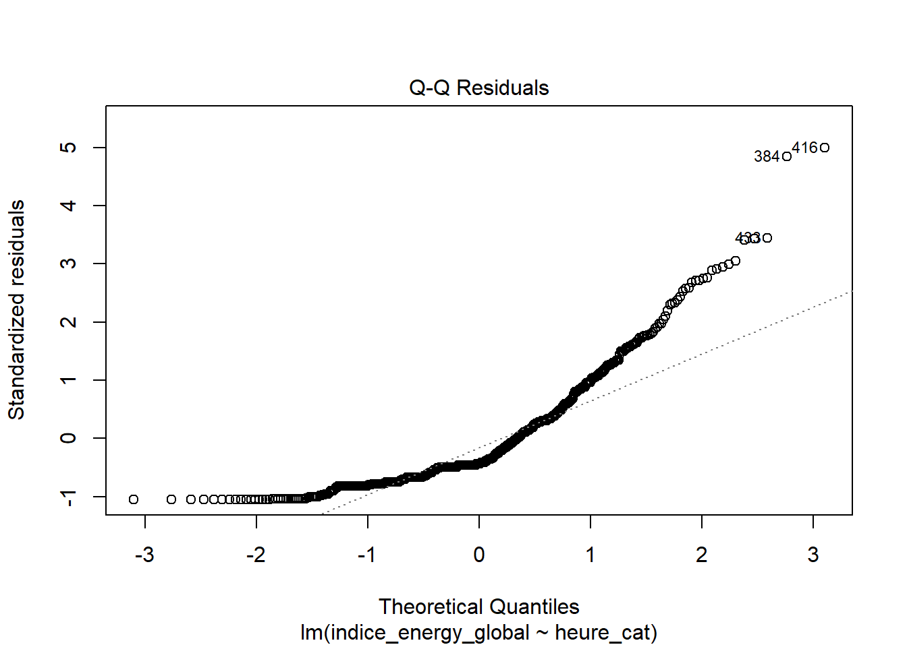
check_heteroskedasticity(model3)Warning: Heteroscedasticity (non-constant error variance) detected (p < .001).Les hypothèses ne sont clairement pas validées
test non paramétrique 2
kruskal.test(indice_energy_global ~ heure_cat, data = tableau_global)
Kruskal-Wallis rank sum test
data: indice_energy_global by heure_cat
Kruskal-Wallis chi-squared = 20.691, df = 9, p-value = 0.0141La p-value étant basse, le test détecte des différences significatives entre les catégories horaires.
dunn_test(data=tableau_global , indice_energy_global ~ heure_cat)# A tibble: 45 × 9
.y. group1 group2 n1 n2 statistic p p.adj p.adj.signif
* <chr> <chr> <chr> <int> <int> <dbl> <dbl> <dbl> <chr>
1 indice_energy… 9h-10h 7h-8h 59 18 0.163 0.870 1 ns
2 indice_energy… 9h-10h 8h-9h 59 54 -1.22 0.221 1 ns
3 indice_energy… 9h-10h 10h-1… 59 64 -0.0449 0.964 1 ns
4 indice_energy… 9h-10h 11h-1… 59 44 -1.33 0.182 1 ns
5 indice_energy… 9h-10h 12h-1… 59 14 -0.571 0.568 1 ns
6 indice_energy… 9h-10h 13h-1… 59 64 -1.59 0.113 1 ns
7 indice_energy… 9h-10h 14h-1… 59 70 -3.00 0.00271 0.119 ns
8 indice_energy… 9h-10h 15h-1… 59 72 -2.91 0.00362 0.152 ns
9 indice_energy… 9h-10h 16h-1… 59 59 -2.20 0.0276 1 ns
10 indice_energy… 7h-8h 8h-9h 18 54 -1.01 0.313 1 ns
# ℹ 35 more rowsLe test détecte que les dépenses énergétiques entre 9h-10h et 14h-17h, entre 7h-8h et 14h-16h,entre 10h-11h et 14h-17h, sont significativement différentes.
Impact de la classe horaire sur l’activité
#formation des classes horaires
breaks <- seq(420, 1020, by = 60)
labels_heure <- paste0(breaks[-length(breaks)]/60, "h-", breaks[-1]/60, "h")
donne_fauvette_meteo$heure_cat <- cut(donne_fauvette_meteo$Minute.AM,
breaks = breaks,
labels = labels_heure,
include.lowest = TRUE)
#création du plot
ggplot(donne_fauvette_meteo) +
stat_summary(aes(x = heure_cat, y = dist_lat_strophe_survol), fun = mean, geom = "bar", alpha = 0.8) +
stat_summary(aes(x = heure_cat, y = dist_lat_strophe_survol), fun.data = mean_cl_normal, geom = "errorbar", width = 0.2) +
geom_text(
data = data.frame(
"x" = c(1,2,3,4,5,6,7,8,9),
"y" = c(1.5,1.3,2.4,1.8,1.7,1.5,0.8,0.4,1.3),
"label" = c("ns","ns","a","ns","ns","ns","b","b","ns")
),
aes(x = x, y = y, label = label),
size = 3
) +
labs(
title = "Indice d'activité par tranche de 1 heure",
x = "Heures",
y = "Indice d'activité"
) +
theme_minimal() +
theme(axis.text.x = element_text(angle = 45, hjust = 1))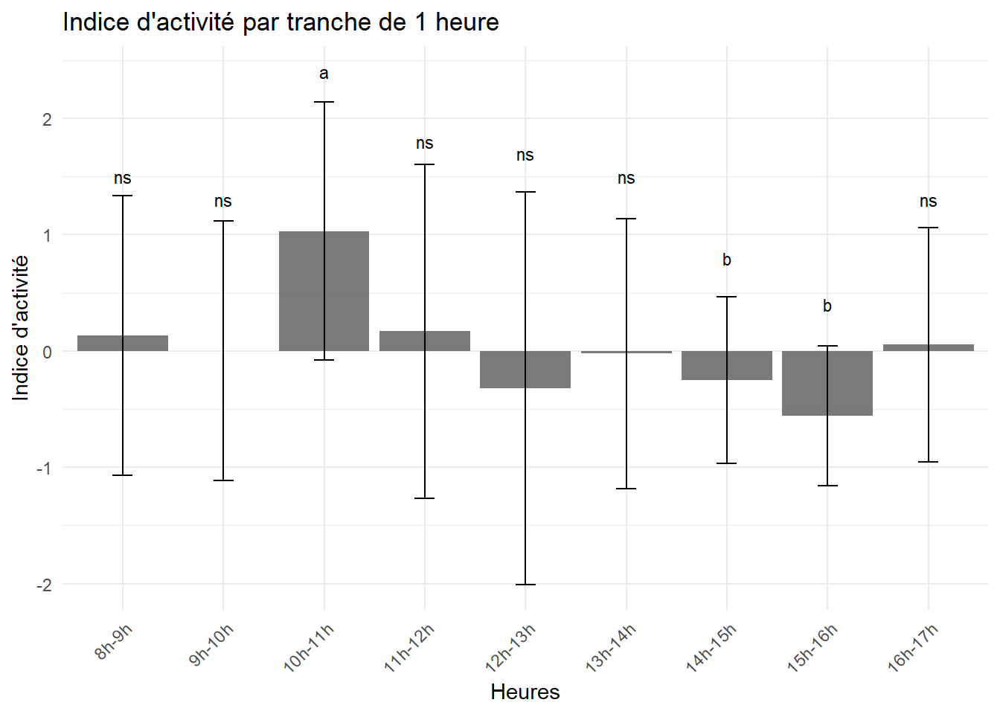
modèle linéaire (paramétrique) 3
#modification des references pour tester les différences entre les intervales
donne_fauvette_meteo$heure_cat <- relevel(donne_fauvette_meteo$heure_cat, ref = "10h-11h")
model4 <- lm(dist_lat_strophe_survol ~ heure_cat , data = donne_fauvette_meteo )
summary(model4)
Call:
lm(formula = dist_lat_strophe_survol ~ heure_cat, data = donne_fauvette_meteo)
Residuals:
Min 1Q Median 3Q Max
-3.3187 -1.7301 0.0208 1.3365 6.2240
Coefficients:
Estimate Std. Error t value Pr(>|t|)
(Intercept) 1.0295 0.4697 2.192 0.0301 *
heure_cat8h-9h -0.8948 0.7302 -1.226 0.2225
heure_cat9h-10h -1.0292 0.6549 -1.571 0.1184
heure_cat11h-12h -0.8611 0.7983 -1.079 0.2827
heure_cat12h-13h -1.3513 0.8697 -1.554 0.1226
heure_cat13h-14h -1.0518 0.6549 -1.606 0.1106
heure_cat14h-15h -1.2810 0.6254 -2.048 0.0424 *
heure_cat15h-16h -1.5885 0.6139 -2.588 0.0107 *
heure_cat16h-17h -0.9759 0.6549 -1.490 0.1385
---
Signif. codes: 0 '***' 0.001 '**' 0.01 '*' 0.05 '.' 0.1 ' ' 1
Residual standard error: 1.937 on 136 degrees of freedom
Multiple R-squared: 0.05234, Adjusted R-squared: -0.003408
F-statistic: 0.9389 on 8 and 136 DF, p-value: 0.4868Vérification des hypothèses
hist(residuals((model4)) , breaks = 40)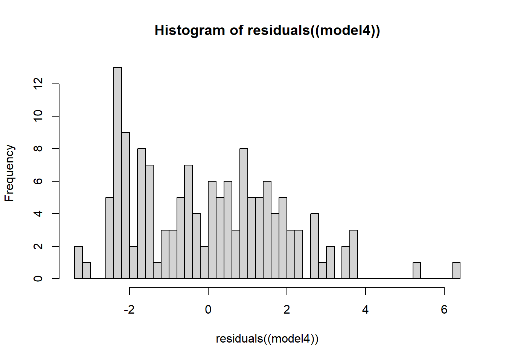
plot(model4 , which = 2)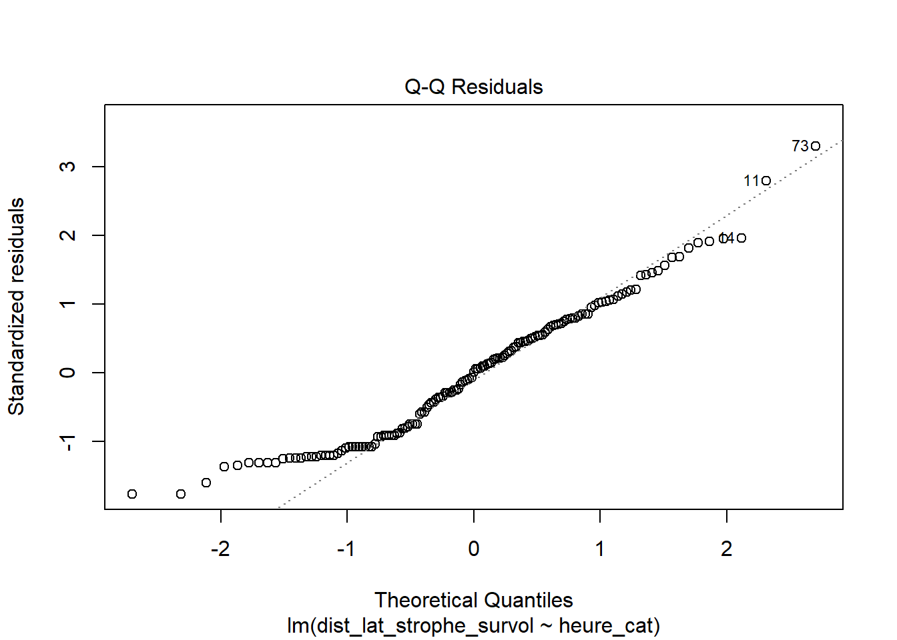
check_heteroskedasticity(model4)OK: Error variance appears to be homoscedastic (p = 0.111).En dehors des valeurs inférieures à -1, il semblerait que l’on ait une distribution normale, et les différentes hypothèses sont validées, il y aurait donc une différence significative entre 10h-11h et 14h-16h. Pour consolider / approfondir, on peut poursuivre avec un kruskal test.
test non paramétrique 3
kruskal.test(dist_lat_strophe_survol ~ heure_cat, data = donne_fauvette_meteo)
Kruskal-Wallis rank sum test
data: dist_lat_strophe_survol by heure_cat
Kruskal-Wallis chi-squared = 7.0573, df = 8, p-value = 0.5305dunn_test(data=donne_fauvette_meteo , dist_lat_strophe_survol ~ heure_cat)# A tibble: 36 × 9
.y. group1 group2 n1 n2 statistic p p.adj p.adj.signif
* <chr> <chr> <chr> <int> <int> <dbl> <dbl> <dbl> <chr>
1 dist_lat_strop… 10h-1… 8h-9h 17 12 -1.16 0.247 1 ns
2 dist_lat_strop… 10h-1… 9h-10h 17 18 -1.72 0.0853 1 ns
3 dist_lat_strop… 10h-1… 11h-1… 17 9 -0.820 0.412 1 ns
4 dist_lat_strop… 10h-1… 12h-1… 17 7 -1.31 0.191 1 ns
5 dist_lat_strop… 10h-1… 13h-1… 17 18 -1.80 0.0720 1 ns
6 dist_lat_strop… 10h-1… 14h-1… 17 22 -1.96 0.0496 1 ns
7 dist_lat_strop… 10h-1… 15h-1… 17 24 -2.43 0.0150 0.541 ns
8 dist_lat_strop… 10h-1… 16h-1… 17 18 -1.40 0.162 1 ns
9 dist_lat_strop… 8h-9h 9h-10h 12 18 -0.392 0.695 1 ns
10 dist_lat_strop… 8h-9h 11h-1… 12 9 0.223 0.824 1 ns
# ℹ 26 more rowsLe test confirme une différence significative entre 10h-11h et 14h-16h. Cela confirme bien le pic d’activité en fin de matinée de la fauvette à tête noire.
II.3. Quelle est l’influence des paramètres météorologiques sur l’activité des fauvettes ?
Compilation des indices météo par classes horaires
# calcul les moyennes indices 1,2,3 (temperature_vent_météo, pluie, ensoleillement) :
moyennes_par_tranche <- donne_fauvette_meteo %>%
group_by(heure_cat) %>%
summarise(moyenne_Temperature_Vent_Humidite = mean(temperature_vent_humidite, na.rm = TRUE),moyenne_pluie = mean(pluie, na.rm = TRUE),moyenne_soleil = mean(ensoleillement, na.rm = TRUE))
View(moyennes_par_tranche)Plot joint entre l’indice energétique de réponse par heure et les indices météo
donne_estim <- readRDS(file = "données_estim.rds")
#ordre_heures <- c("8h-9h", "9h-10h", "10h-11h", "11h-12h", "12h-13h",
# "13h-14h", "14h-15h", "15h-16h", "16h-17h")
#donne_estim$heure_cat <- factor(donne_estim$heure_cat, levels = ordre_heures)
#moyennes_par_tranche$heure_cat <- factor(moyennes_par_tranche$heure_cat, levels = ordre_heures)
#plot avec les estimations en plus
ggplot(donne_estim) +
stat_summary(aes(x = heure_cat, y = indice_energy, fill = color_group), fun = mean, geom = "bar", alpha = 0.8) +
stat_summary(aes(x = heure_cat, y = indice_energy, fill = color_group), fun.data = mean_cl_normal, geom = "errorbar", width = 0.2) +
geom_text(
data = data.frame(
"x" = c("8h-9h","9h-10h","10h-11h","11h-12h","12h-13h","13h-14h","14h-15h","15h-16h","16h-17h"),
"y" = c(420,530,835,450,590,450,420,300,715),
"label" = c("a","a","b","ns","ns","a","a","a","ns")
),
aes(x = x, y = y, label = label),
size = 3
) +
geom_line(
data = moyennes_par_tranche ,
aes(x=heure_cat , y=50*moyenne_Temperature_Vent_Humidite+1000, group = 1), color = 'black'
)+
geom_line(
data = moyennes_par_tranche,
aes(x=heure_cat , y=50*moyenne_pluie+800, group = 1), color = 'blue'
)+
geom_line(
data = moyennes_par_tranche ,
aes(x=heure_cat , y=50*moyenne_soleil+900, group = 1), color = 'orange'
)+ geom_text(
data = data.frame(
"x" = c("15h-16h","15h-16h","15h-16h"),
"y" = c(1100,950,810),
"label" = c("T°c - Vent","Soleil","Pluie")
),
aes(x = x, y = y, label = label),
size = 3
) +
scale_fill_manual(
values = c("avec estimation" = "darkblue", "sans estimation" = "tomato")
) +
scale_y_continuous(sec.axis = sec_axis(transform = ~./50, name = "Indices ACP (UA)")) +
labs(
title = "Indice d'énergie moyenne par tranche de 1 heure",
x = "Heures",
y = "Indice d'énergie (moyenne)"
) +
theme_minimal() +
theme(axis.text.x = element_text(angle = 45, hjust = 1))Warning in stat_summary(aes(x = heure_cat, y = indice_energy, fill =
color_group), : Ignoring unknown aesthetics: fill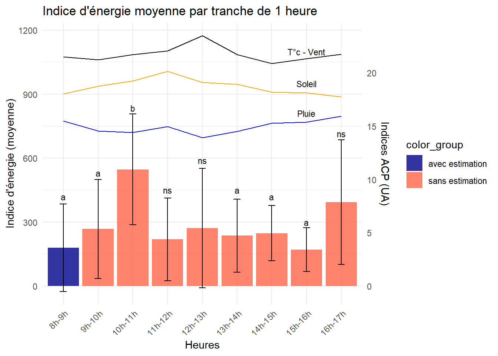
Les courbes des indices météo ne semblent pas impacter l’intensité de la réponse. Toutefois, l’indice de température et de vent a les même variations journalières que l’intensité de la réponse, on peut suspecter un lien de causalité.
Importation de l’indice énergétique dans le data frame Donnees_ACP:
rm(donnen)Warning in rm(donnen): objet 'donnen' introuvabledonnen <- donne %>% mutate(cris_post = donne_estim$cris_post,
cris_pre = donne_estim$cris_pre,
cris_diff = donne_estim$cris_diff,
cris_toto = donne_estim$cris_toto)
donnen <- bind_cols(donnen, donne_estim$indice_energy)New names:
• `` -> `...44`#donnen <- rename(donnen, indice_energy = ...44)
donnen <- donnen %>% mutate(ID_male = as.factor(ID_male))
donne_nuage <- donnen %>% select(c(indice_energy, str_diff, cris_diff, dh_utc_arrondi, diff, type_diff))
donne_nuage <- donne_nuage %>% left_join(donne_meteo, by = c("dh_utc_arrondi" = "dh_utc"))donne_nuage <- readRDS(file = "output/donne_nuage.rds")Importation des données
Donnees_complet <- readRDS("output/donne.rds")
View(fauvette)
View(meteo)
View(Donnees_complet)Importation des regroupements de paramètres issus d’ACP
Donnees_ACP <- readRDS("output/donne_fauvette_meteo.rds")
View(Donnees_ACP)Le data frame “donne_nuage” est un data frame qui contient l’indice d’énergie, type_diff et les indices de l’ACP météo.
Indice d’Activité = f(météo)
##Indice 1 de la météo
# Création du modèle et test statistique
modele_lm_meteo1 <- lm(dist_lat_strophe_survol ~ temperature_vent_humidite, data = Donnees_ACP)
r2 <- summary(modele_lm_meteo1)$r.squared
pval <- summary(modele_lm_meteo1)$coefficients[2, 4]
performance::check_normality(modele_lm_meteo1)Warning: Non-normality of residuals detected (p < .001).performance::check_heteroskedasticity(modele_lm_meteo1)OK: Error variance appears to be homoscedastic (p = 0.123).performance::check_model(modele_lm_meteo1)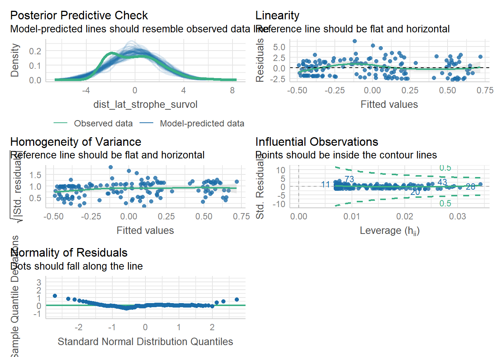
# Graphique avec droite de régression + R² + p-value
ggplot(Donnees_ACP, aes(x = temperature_vent_humidite, y = dist_lat_strophe_survol)) +
geom_point(size = 2) +
geom_smooth(method = "lm", se = FALSE, color = "blue") +
annotate("text", x = Inf, y = Inf, label = paste0("R² = ", round(r2, 3)),
hjust = 1.1, vjust = 1.5, size = 4, fontface = "italic") +
annotate("text", x = Inf, y = Inf, label = paste0("p = ", format.pval(pval, digits = 3, eps = .001)),
hjust = 1.1, vjust = 3.4, size = 4, fontface = "italic") +
theme_minimal() +
labs(
title = "Indice d'Activité des fauvettes en fonction de la météo (Indices 1)",
x = "Météo (Indice 1 : Température + vent + humidité)",
y = "Activité (Indice 1 : Dmin + latence + str + survol)"
) +
theme(legend.position = "none")`geom_smooth()` using formula = 'y ~ x'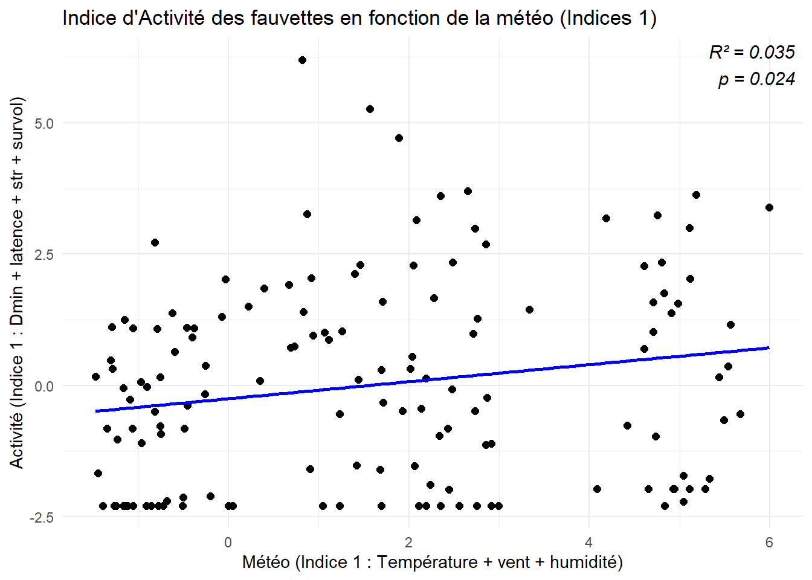
##Indice 2 de la météo
# Création du modèle et test statistique
modele_lm_meteo2 <- lm(dist_lat_strophe_survol ~ pluie, data = Donnees_ACP)
r2 <- summary(modele_lm_meteo2)$r.squared
pval <- summary(modele_lm_meteo2)$coefficients[2, 4]
performance::check_normality(modele_lm_meteo2)Warning: Non-normality of residuals detected (p < .001).performance::check_heteroskedasticity(modele_lm_meteo2)OK: Error variance appears to be homoscedastic (p = 0.630).performance::check_model(modele_lm_meteo2)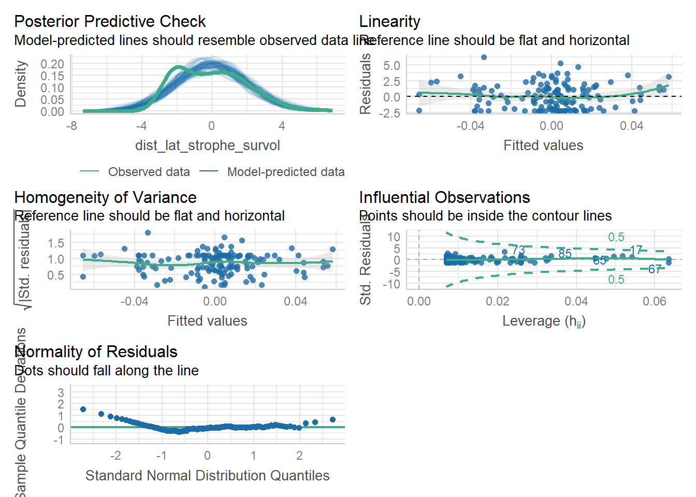
# Graphique avec droite de régression + R² + p-value
ggplot(Donnees_ACP, aes(x = pluie, y = dist_lat_strophe_survol)) +
geom_point(size = 2) +
geom_smooth(method = "lm", se = FALSE, color = "red") +
annotate("text", x = Inf, y = Inf, label = paste0("R² = ", round(r2, 3)),
hjust = 1.1, vjust = 1.5, size = 4, fontface = "italic") +
annotate("text", x = Inf, y = Inf, label = paste0("p = ", format.pval(pval, digits = 3, eps = .001)),
hjust = 1.1, vjust = 3.4, size = 4, fontface = "italic") +
theme_minimal() +
labs(
title = "Indice d'Activité des fauvettes en fonction de la météo (Indice 2)",
x = "Météo (Indice 2 : Pluie)",
y = "Activité (Indice 1 : Dmin + latence + str + survol)"
) +
theme(legend.position = "none")`geom_smooth()` using formula = 'y ~ x'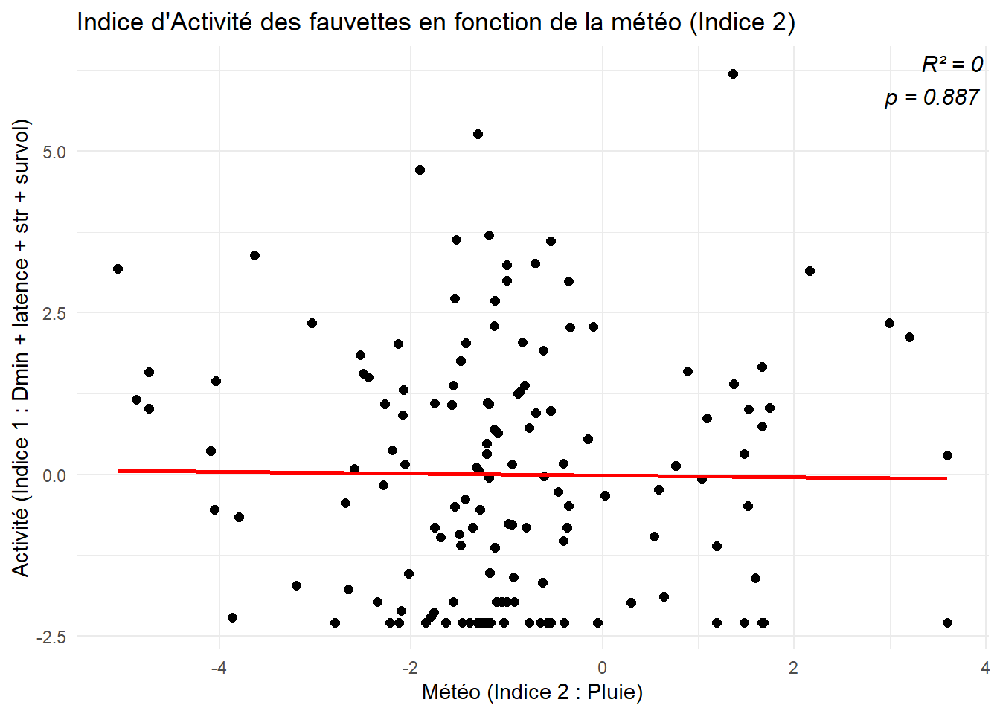
##Indice 3 de la météo
# Création du modèle et test statistique
modele_lm_meteo3 <- lm(dist_lat_strophe_survol ~ ensoleillement, data = Donnees_ACP)
r2 <- summary(modele_lm_meteo3)$r.squared
pval <- summary(modele_lm_meteo3)$coefficients[2, 4]
performance::check_normality(modele_lm_meteo3)Warning: Non-normality of residuals detected (p < .001).performance::check_heteroskedasticity(modele_lm_meteo3)OK: Error variance appears to be homoscedastic (p = 0.542).performance::check_model(modele_lm_meteo3)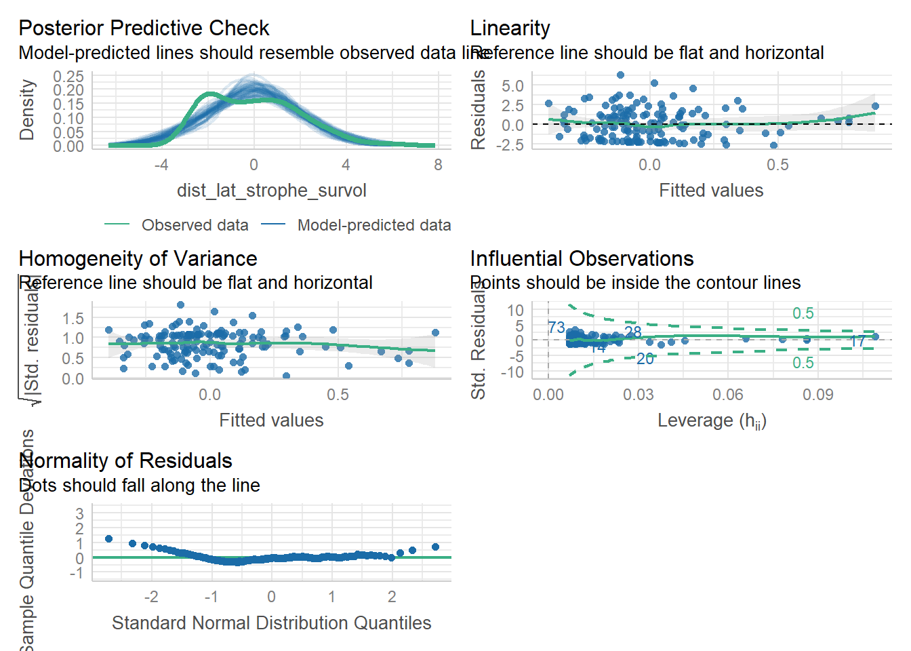
# Graphique avec droite de régression + R² + p-value
ggplot(Donnees_ACP, aes(x = ensoleillement, y = dist_lat_strophe_survol)) +
geom_point(size = 2) +
geom_smooth(method = "lm", se = FALSE, color = "orange") +
annotate("text", x = Inf, y = Inf, label = paste0("R² = ", round(r2, 3)),
hjust = 1.1, vjust = 1.5, size = 4, fontface = "italic") +
annotate("text", x = Inf, y = Inf, label = paste0("p = ", format.pval(pval, digits = 3, eps = .001)),
hjust = 1.1, vjust = 3.4, size = 4, fontface = "italic") +
theme_minimal() +
labs(
title = "Indice d'Activité des fauvettes en fonction de la météo (Indice 3)",
x = "Météo (Indice 3 : Ensoleillement)",
y = "Activité (Indice 1 : Dmin + latence + str + survol)"
) +
theme(legend.position = "none")`geom_smooth()` using formula = 'y ~ x'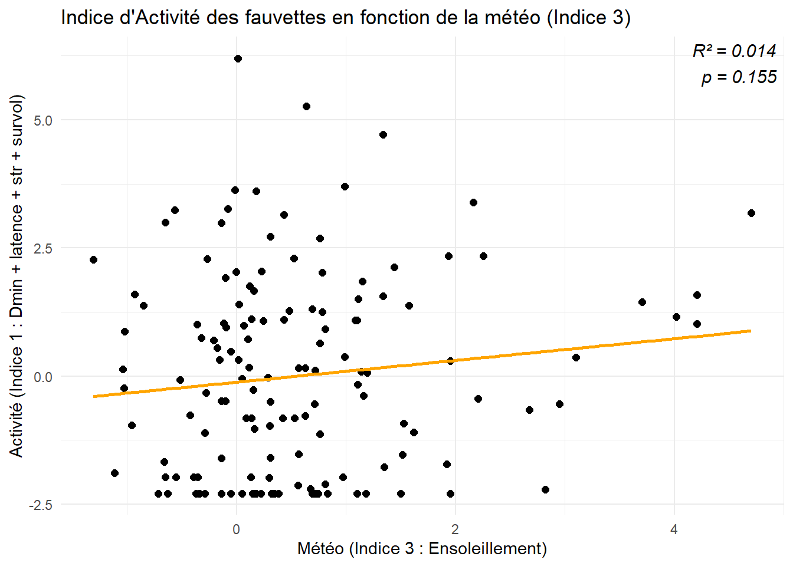
On observe que seul l’axe 1 de la météo (température + vent + humidité) explique une partie des données (3.5%)
Indice d’énergie = f(météo)
##Axe 1 de la météo
# Création du modèle et test statistique
modele_lm_meteo1_energie <- lm(indice_energy ~ temperature_vent_humidite, data = donne_nuage)
r2 <- summary(modele_lm_meteo1_energie)$r.squared
pval <- summary(modele_lm_meteo1_energie)$coefficients[2, 4]
performance::check_normality(modele_lm_meteo1_energie)Warning: Non-normality of residuals detected (p < .001).performance::check_heteroskedasticity(modele_lm_meteo1_energie)Warning: Heteroscedasticity (non-constant error variance) detected (p < .001).performance::check_model(modele_lm_meteo1_energie)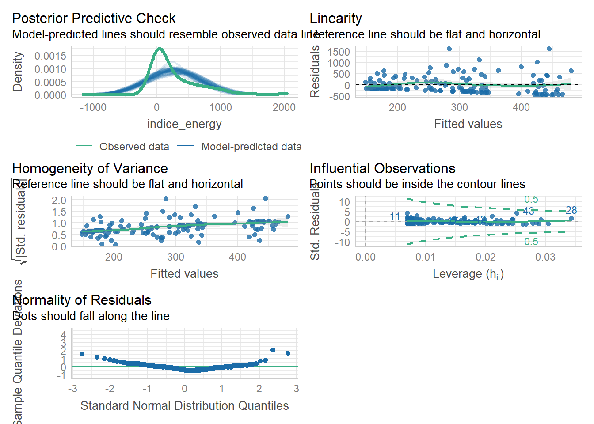
# Graphique avec droite de régression + R² + p-value
ggplot(donne_nuage, aes(x = temperature_vent_humidite, y = indice_energy)) +
geom_point(size = 2) +
geom_smooth(method = "lm", se = FALSE, color = "blue") +
annotate("text", x = Inf, y = Inf, label = paste0("R² = ", round(r2, 3)),
hjust = 1.1, vjust = 1.5, size = 4, fontface = "italic") +
annotate("text", x = Inf, y = Inf, label = paste0("p = ", format.pval(pval, digits = 3, eps = .001)),
hjust = 1.1, vjust = 3.4, size = 4, fontface = "italic") +
theme_minimal() +
labs(
title = "Indice énergétique des fauvettes en fonction de la météo (Indice 1)",
x = "Météo (Indice 1 : Température + vent + humidité)",
y = "Indice énergétique"
) +
theme(legend.position = "none")`geom_smooth()` using formula = 'y ~ x'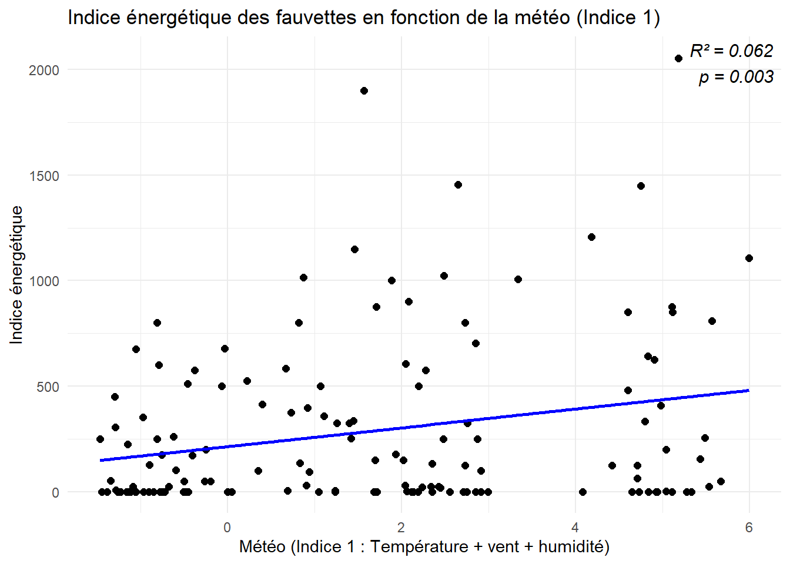
##Axe 2 de la météo
# Création du modèle et test statistique
modele_lm_meteo2_energie <- lm(indice_energy ~ pluie, data = donne_nuage)
r2 <- summary(modele_lm_meteo2_energie)$r.squared
pval <- summary(modele_lm_meteo2_energie)$coefficients[2, 4]
performance::check_normality(modele_lm_meteo2_energie)Warning: Non-normality of residuals detected (p < .001).performance::check_heteroskedasticity(modele_lm_meteo2_energie)OK: Error variance appears to be homoscedastic (p = 0.147).performance::check_model(modele_lm_meteo2_energie)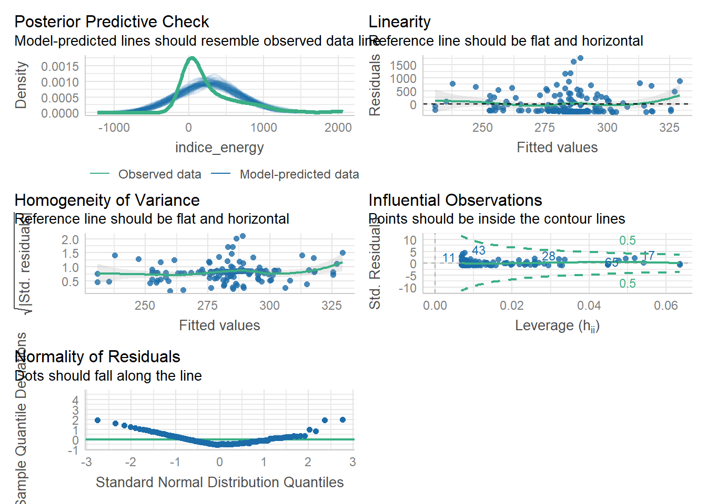
# Graphique avec droite de régression + R² + p-value
ggplot(donne_nuage, aes(x = pluie, y = indice_energy)) +
geom_point(size = 2) +
geom_smooth(method = "lm", se = FALSE, color = "red") +
annotate("text", x = Inf, y = Inf, label = paste0("R² = ", round(r2, 3)),
hjust = 1.1, vjust = 1.5, size = 4, fontface = "italic") +
annotate("text", x = Inf, y = Inf, label = paste0("p = ", format.pval(pval, digits = 3, eps = .001)),
hjust = 1.1, vjust = 3.4, size = 4, fontface = "italic") +
theme_minimal() +
labs(
title = "Indice énergétique des fauvettes en fonction de la météo (Indice 2)",
x = "Météo (Indice 2 : Pluie)",
y = "Indice énergétique"
) +
theme(legend.position = "none")`geom_smooth()` using formula = 'y ~ x'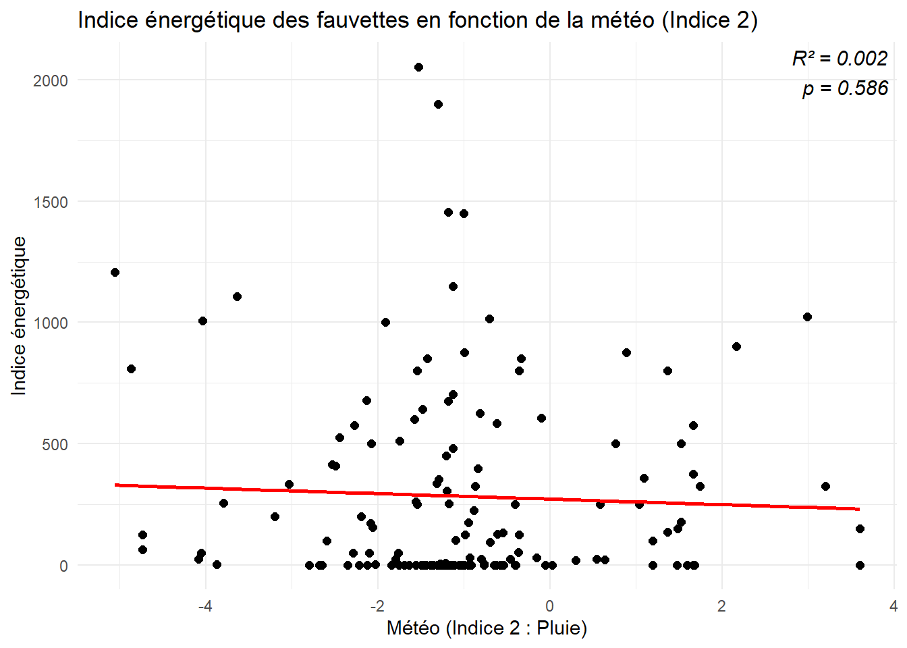
##Axe 3 de la météo
# Création du modèle et test statistique
modele_lm_meteo3_energie <- lm(indice_energy ~ ensoleillement, data = donne_nuage)
r2 <- summary(modele_lm_meteo3_energie)$r.squared
pval <- summary(modele_lm_meteo3_energie)$coefficients[2, 4]
performance::check_normality(modele_lm_meteo3_energie)Warning: Non-normality of residuals detected (p < .001).performance::check_heteroskedasticity(modele_lm_meteo3_energie)OK: Error variance appears to be homoscedastic (p = 0.576).performance::check_model(modele_lm_meteo3_energie)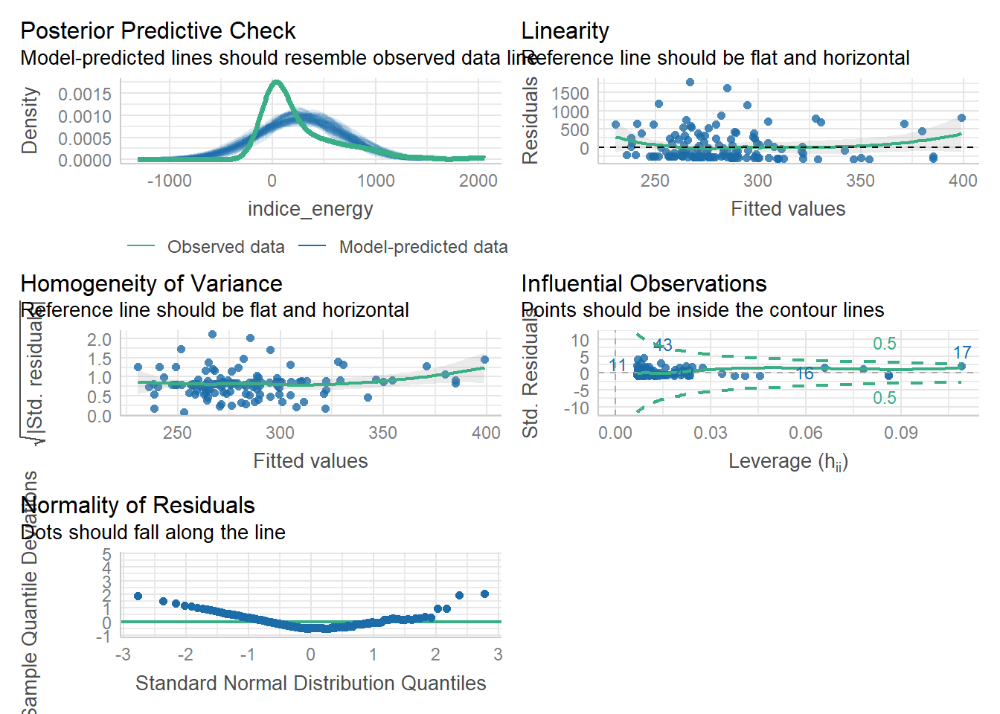
# Graphique avec droite de régression + R² + p-value
ggplot(donne_nuage, aes(x = ensoleillement, y = indice_energy)) +
geom_point(size = 2) +
geom_smooth(method = "lm", se = FALSE, color = "orange") +
annotate("text", x = Inf, y = Inf, label = paste0("R² = ", round(r2, 3)),
hjust = 1.1, vjust = 1.5, size = 4, fontface = "italic") +
annotate("text", x = Inf, y = Inf, label = paste0("p = ", format.pval(pval, digits = 3, eps = .001)),
hjust = 1.1, vjust = 3.4, size = 4, fontface = "italic") +
theme_minimal() +
labs(
title = "Indice énergétique des fauvettes en fonction de la météo (Indice 3)",
x = "Météo (Indice 3 : Ensoleillement)",
y = "Indice énergétique"
) +
theme(legend.position = "none")`geom_smooth()` using formula = 'y ~ x'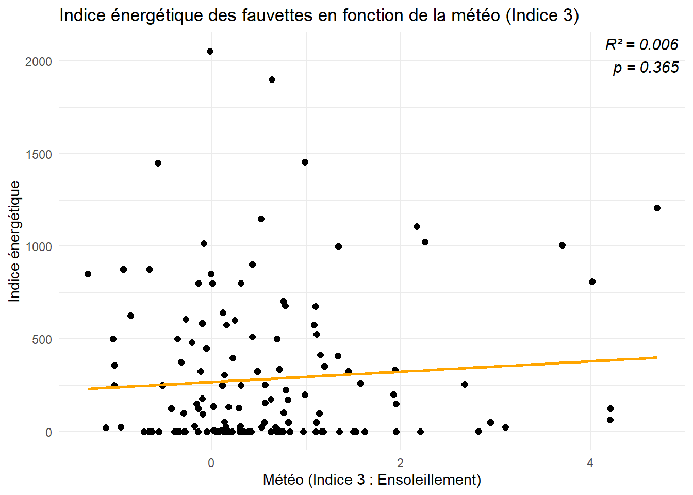
On observe qu’en utilisant l’indice énergétique, on obtient les même résultats que ceux obtenue en utilisant l’indice d’activité. Ce qui confirme notre conclusion : l’indice 1 des paramètres météorologiques (Température + vent + humidité) est le seul à expliquer une part de la variance de l’activité des fauvettes à têtes noire.
II.4. Existe-il une atténuation de la réponse des fauvettes au fil des diffusions ?
Mise en page des données
rep <- donne_estim$indice_energy
indice1 <- donne_fauvette_meteo$dist_lat_strophe_survol
pré <- 25*(donne_estim$str_pre) + donne_estim$cris_pre
mâle <- as.factor(donne_fauvette_meteo$ID_male)
jour <- as.factor(donne_fauvette_meteo$Jour)
diff <- relevel(as.factor(donne_fauvette_meteo$diff),"T_1")Impact du jour d’échantillonnage
lmjour <- lm(rep~jour)
summary(lmjour)
Call:
lm(formula = rep ~ jour)
Residuals:
Min 1Q Median 3Q Max
-435.5 -262.8 -124.7 189.5 1619.5
Coefficients:
Estimate Std. Error t value Pr(>|t|)
(Intercept) 435.49 56.27 7.740 1.74e-12 ***
jour2 -155.72 81.40 -1.913 0.05777 .
jour3 -310.77 106.92 -2.907 0.00425 **
jour4 -266.30 84.78 -3.141 0.00205 **
---
Signif. codes: 0 '***' 0.001 '**' 0.01 '*' 0.05 '.' 0.1 ' ' 1
Residual standard error: 385.7 on 141 degrees of freedom
Multiple R-squared: 0.08797, Adjusted R-squared: 0.06856
F-statistic: 4.533 on 3 and 141 DF, p-value: 0.004575#non normalité et hétéroscédasticité
performance::check_model(lmjour)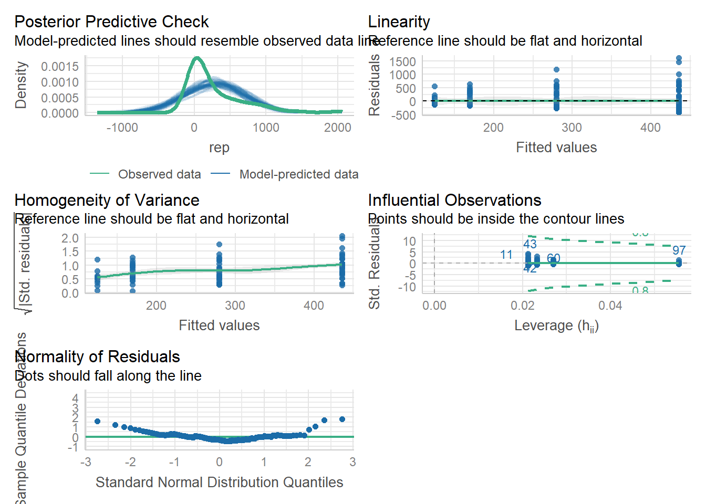
performance::check_normality(lmjour)Warning: Non-normality of residuals detected (p < .001).performance::check_heteroscedasticity(lmjour)Warning: Heteroscedasticity (non-constant error variance) detected (p < .001).kruskal.test(rep~jour)
Kruskal-Wallis rank sum test
data: rep by jour
Kruskal-Wallis chi-squared = 9.4522, df = 3, p-value = 0.02385# relation linéaire en non paramlmjour <- lm(indice1~jour)
summary(lmjour)
Call:
lm(formula = indice1 ~ jour)
Residuals:
Min 1Q Median 3Q Max
-2.8167 -1.5709 -0.0764 1.3856 5.9870
Coefficients:
Estimate Std. Error t value Pr(>|t|)
(Intercept) 0.5275 0.2749 1.919 0.05705 .
jour2 -0.3128 0.3978 -0.786 0.43294
jour3 -0.9415 0.5225 -1.802 0.07369 .
jour4 -1.2458 0.4143 -3.007 0.00312 **
---
Signif. codes: 0 '***' 0.001 '**' 0.01 '*' 0.05 '.' 0.1 ' ' 1
Residual standard error: 1.885 on 141 degrees of freedom
Multiple R-squared: 0.06918, Adjusted R-squared: 0.04938
F-statistic: 3.493 on 3 and 141 DF, p-value: 0.01738#non normalité et hétéroscédasticité
performance::check_model(lmjour)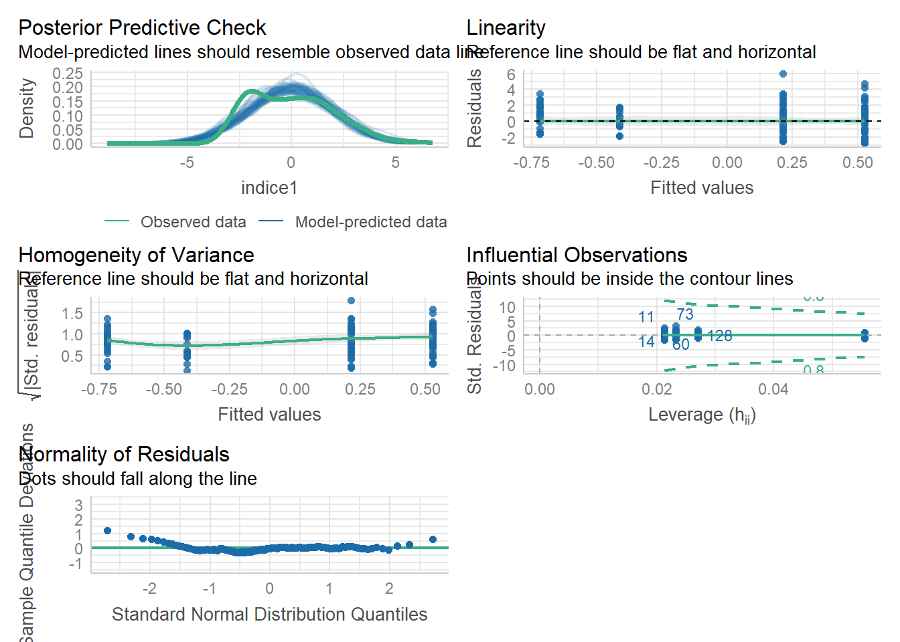
performance::check_normality(lmjour)Warning: Non-normality of residuals detected (p < .001).performance::check_heteroscedasticity(lmjour)Warning: Heteroscedasticity (non-constant error variance) detected (p = 0.028).kruskal.test(indice1~jour)
Kruskal-Wallis rank sum test
data: indice1 by jour
Kruskal-Wallis chi-squared = 10.394, df = 3, p-value = 0.01549# relation linéaire en non paramUtilisation de toutes les années
mise en page des données
fauvette_2024 <- read.csv("table_birds_2024.csv", sep = ",", header = TRUE, encoding = "UTF-8")
fauvette_2023 <- read.csv("table_birds_2023.csv", sep = ",", header = TRUE, encoding = "UTF-8")
fauvette_2023 <- fauvette_2023 %>%
mutate(
JOUR = ifelse(JOUR == 5, 1, JOUR),
JOUR = ifelse(JOUR == 6, 2, JOUR),
JOUR = ifelse(JOUR == 7, 3, JOUR),
JOUR = ifelse(JOUR == 8, 4, JOUR)
)
fauvette_2024 <- fauvette_2024 %>% mutate(
JOUR = ifelse(JOUR == "2024-04-09", 1, JOUR),
JOUR = ifelse(JOUR == "2024-04-10", 2, JOUR),
JOUR = ifelse(JOUR == "2024-04-11", 3, JOUR),
JOUR = ifelse(JOUR == "2024-04-12", 4, JOUR),
JOUR = as.numeric(JOUR)
)
fauvette_2023 <- fauvette_2023 %>% mutate(indice_energy_globa = CRIS + 250 * SURVOLS + 25 * (STROPHES_AVANT + STROPHES_APRES))
fauvette_2024 <- fauvette_2024 %>% mutate(indice_energy_globa = CRIS + 250 * SURVOLS + 25 * (STROPHES_AVANT + STROPHES_APRES))
fauvette_attenuation <- fauvette %>% mutate(indice_energy_globa = cris_toto + 250 * survols + 25 * (str_pre + str_post_diff),
JOUR = Jour)
donne_attenuation <- fauvette_2023 %>% select(indice_energy_globa, JOUR)
donne_attenuation <- bind_rows(donne_attenuation, fauvette_2024, fauvette_attenuation)
donne_attenuation <- donne_attenuation %>% select(indice_energy_globa, JOUR)
donne_attenuation <- donne_attenuation %>% mutate(JOUR = as.factor(JOUR)) représentation graphique et test tatistique
#Création du graphique
donne_attenuation %>% ggplot(aes(x = JOUR, y = indice_energy_globa, fill = JOUR)) +
geom_boxplot() +
theme_minimal() +
labs(title = "Activité des fauvettes selon le jour de diffusion",
x = "Jour", y = "Indice d'activité global") +
theme(legend.position = "none")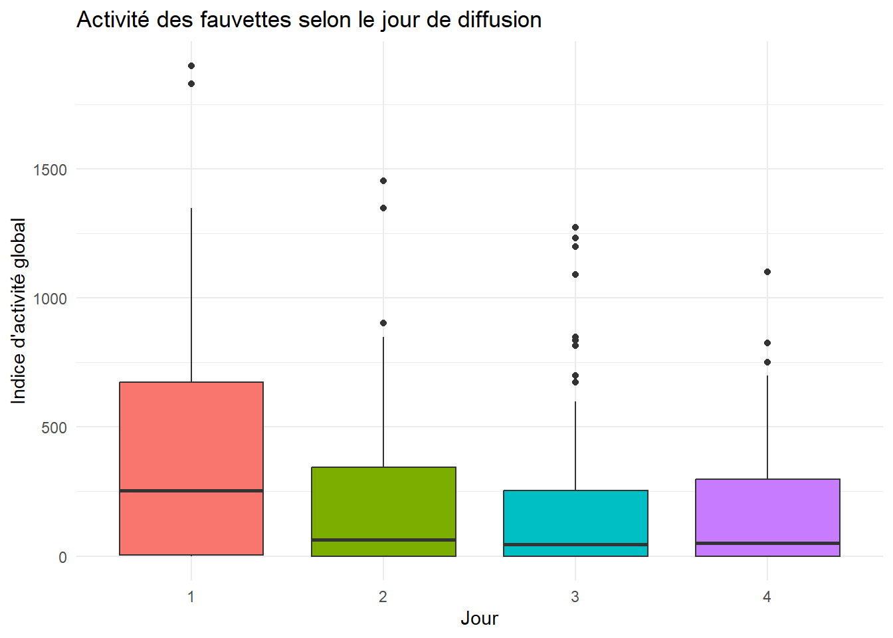
#Test statistique
donne_attenuation$JOUR <- factor(donne_attenuation$JOUR) # Conversion en facteur
donne_attenuation$JOUR <- relevel(donne_attenuation$JOUR, ref = "1") # Changer la référence
modele_lm_att <- lm(donne_attenuation$indice_energy_globa ~ JOUR , data = donne_attenuation)
summary(modele_lm_att)
Call:
lm(formula = donne_attenuation$indice_energy_globa ~ JOUR, data = donne_attenuation)
Residuals:
Min 1Q Median 3Q Max
-395.4 -183.6 -135.0 132.9 1505.7
Coefficients:
Estimate Std. Error t value Pr(>|t|)
(Intercept) 395.35 28.08 14.078 < 2e-16 ***
JOUR2 -178.29 38.79 -4.596 5.43e-06 ***
JOUR3 -216.22 40.36 -5.357 1.28e-07 ***
JOUR4 -211.73 39.64 -5.342 1.38e-07 ***
---
Signif. codes: 0 '***' 0.001 '**' 0.01 '*' 0.05 '.' 0.1 ' ' 1
Residual standard error: 318.9 on 518 degrees of freedom
Multiple R-squared: 0.07123, Adjusted R-squared: 0.06585
F-statistic: 13.24 on 3 and 518 DF, p-value: 2.427e-08performance::check_normality(modele_lm_att)Warning: Non-normality of residuals detected (p < .001).performance::check_heteroskedasticity(modele_lm_att)Warning: Heteroscedasticity (non-constant error variance) detected (p < .001).Les hypothèses ne sont pas respectées on fait donc un kruskal test (test non paramétrique)
kruskal.test(donne_attenuation$indice_energy_globa ~ JOUR , data = donne_attenuation)
Kruskal-Wallis rank sum test
data: donne_attenuation$indice_energy_globa by JOUR
Kruskal-Wallis chi-squared = 27.475, df = 3, p-value = 4.68e-06II.5. Y a-t-il une variabilité de comportement entre les individus ?
Effet du mâle
lmmal <- lm(rep~mâle)
summary(lmmal)
Call:
lm(formula = rep ~ mâle)
Residuals:
Min 1Q Median 3Q Max
-418.1 -245.6 -145.6 132.6 1655.4
Coefficients:
Estimate Std. Error t value Pr(>|t|)
(Intercept) 245.59 73.85 3.326 0.00113 **
mâle2 65.69 104.43 0.629 0.53038
mâle3 172.48 104.43 1.652 0.10089
mâle4 -42.21 104.43 -0.404 0.68673
mâle5 -237.59 212.10 -1.120 0.26460
mâle6 -98.39 192.57 -0.511 0.61022
mâle7 57.61 115.59 0.498 0.61896
---
Signif. codes: 0 '***' 0.001 '**' 0.01 '*' 0.05 '.' 0.1 ' ' 1
Residual standard error: 397.7 on 138 degrees of freedom
Multiple R-squared: 0.05128, Adjusted R-squared: 0.01003
F-statistic: 1.243 on 6 and 138 DF, p-value: 0.2881performance::check_model(lmmal)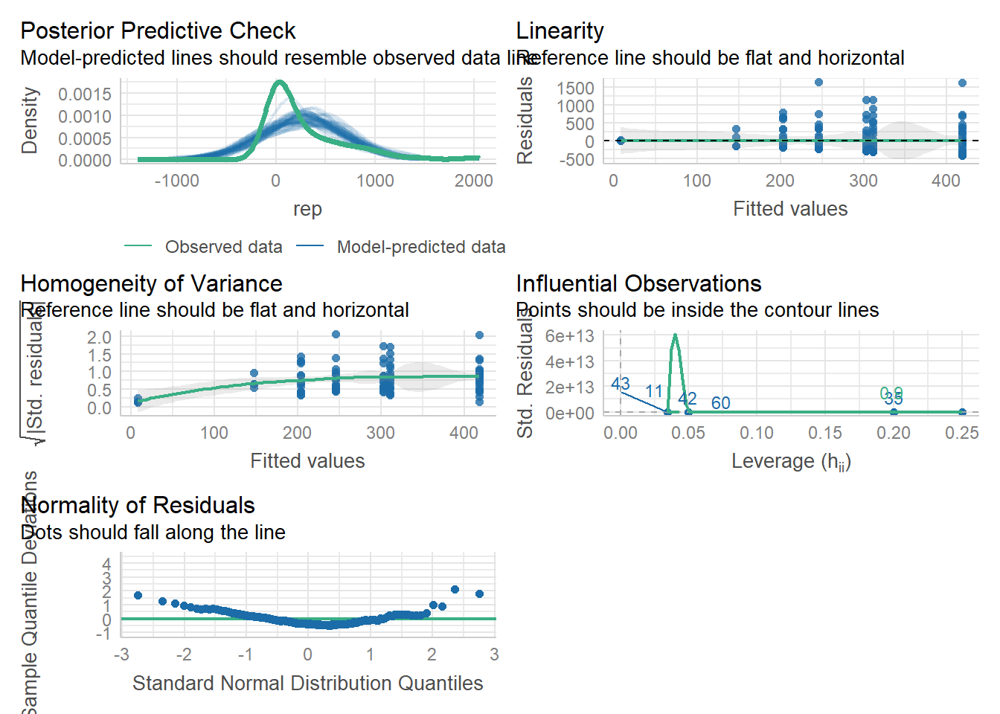
performance::check_normality(lmmal)Warning: Non-normality of residuals detected (p < .001).performance::check_heteroscedasticity(lmmal)Warning: Heteroscedasticity (non-constant error variance) detected (p = 0.009).#non normalité et hétéroscédasticité
kruskal.test(rep~mâle)
Kruskal-Wallis rank sum test
data: rep by mâle
Kruskal-Wallis chi-squared = 9.488, df = 6, p-value = 0.1479#pas de relation linéaire en non paramlmmale <- lm(indice1~mâle)
summary(lmmale)
Call:
lm(formula = indice1 ~ mâle)
Residuals:
Min 1Q Median 3Q Max
-3.2776 -1.7591 -0.1471 1.2614 5.5765
Coefficients:
Estimate Std. Error t value Pr(>|t|)
(Intercept) -0.3115 0.3501 -0.890 0.37514
mâle2 0.1324 0.4951 0.267 0.78956
mâle3 1.3000 0.4951 2.626 0.00963 **
mâle4 0.2086 0.4951 0.421 0.67420
mâle5 -1.1366 1.0056 -1.130 0.26031
mâle6 -0.8633 0.9130 -0.946 0.34598
mâle7 0.3222 0.5480 0.588 0.55747
---
Signif. codes: 0 '***' 0.001 '**' 0.01 '*' 0.05 '.' 0.1 ' ' 1
Residual standard error: 1.885 on 138 degrees of freedom
Multiple R-squared: 0.08858, Adjusted R-squared: 0.04896
F-statistic: 2.235 on 6 and 138 DF, p-value: 0.0433performance::check_model(lmmale)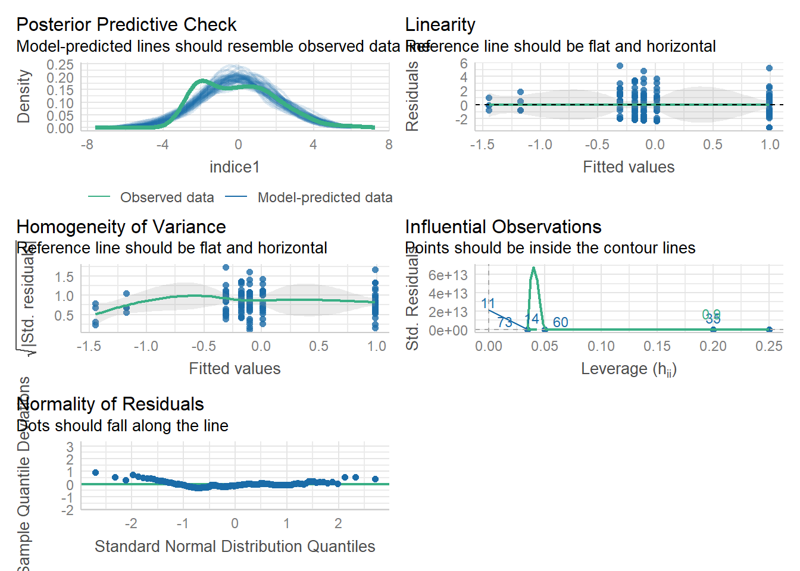
performance::check_normality(lmmale)Warning: Non-normality of residuals detected (p < .001).performance::check_heteroscedasticity(lmmale)OK: Error variance appears to be homoscedastic (p = 0.431).#non normalité et homoscédasticité
kruskal.test(indice1~mâle)
Kruskal-Wallis rank sum test
data: indice1 by mâle
Kruskal-Wallis chi-squared = 11.793, df = 6, p-value = 0.06674#non normalité et homoscédasticité
#pas de relation linéaire en non paramII.6. Quelle est l’influence de l’enregistrement diffusé sur l’activité des fauvettes ?
Cris en fonction du type de chant diffusé
# Création des groupes de triplet de str (pré, diff et post diff)
view(donne)
Donnees_complet_str <- fauvette %>%
pivot_longer(cols = c(cris_pre, cris_diff, cris_post),
cols_vary = "fastest",
names_to = "moment_cris",
values_to = "valeur")%>%
mutate(moment_cris = factor(moment_cris, levels = c("cris_pre", "cris_diff", "cris_post")))
# Graphique avec str_diff et str_post différenciés par la couleur
ggplot(Donnees_complet_str, aes(x = type_diff, y = valeur, fill = moment_cris)) +
geom_boxplot(position = position_dodge(width = 0.75)) +
theme_minimal() +
labs(title = "Nb de cris selon le type de chant diffusé",
x = "Type de chant diffusé", y = "Valeur") +
theme(legend.title = element_blank())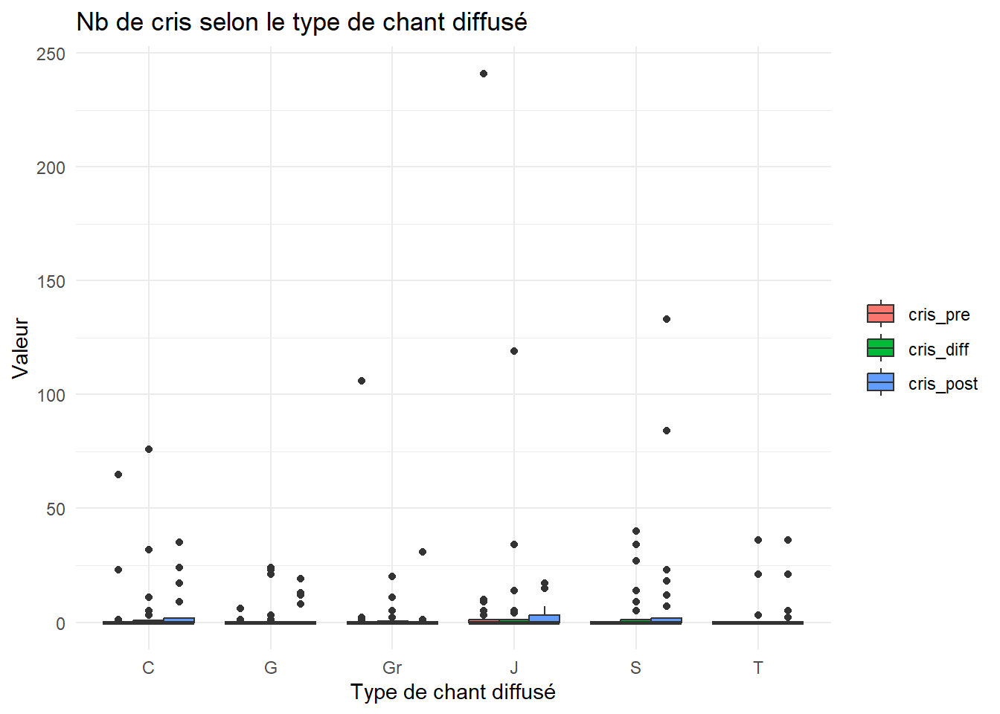
Boxplot chant émits en fonction du chant diffusé
# Création des groupes de triplet de str (pré, diff et post diff)
Donnees_complet_str <- Donnees_complet %>%
pivot_longer(cols = c(str_pre, str_diff, str_post_diff),
names_to = "moment_chant",
values_to = "valeur") %>%
mutate(moment_chant = factor(moment_chant, levels = c("str_pre", "str_diff", "str_post_diff")))
# Graphique avec str_diff et str_post différenciés par la couleur
ggplot(Donnees_complet_str, aes(x = type_diff, y = valeur, fill = moment_chant)) +
geom_boxplot(position = position_dodge(width = 0.75)) +
theme_minimal() +
labs(title = "Nb de str_diff et str_post selon le type de chant diffusé",
x = "Type de chant diffusé", y = "Valeur") +
theme(legend.title = element_blank())On observe de grandes différences de réponse lorsque l’on emet des chants Complet, Jardin et Sifflement par rapport au témoin. Cependant, ces réponses sont quantifiées uniquement par les chants émis par les fauvettes à têtes noire. et nous n’avons pas fait de tests statistiques pour soutenir ces résultats.
Une façon plus précise de quantifier l’activité des fauvettes, est d’utiliser l’indice d’activité obtenu par ACP.
Indice d’Activité = f(diffusion)
#Création du graphique
ggplot(Donnees_ACP, aes(x = type_diff, y = dist_lat_strophe_survol, fill = type_diff)) +
geom_boxplot() +
theme_minimal() +
labs(title = "Activité des fauvettes en fonction du chant diffusé",
x = "Type de chant diffusé", y = "Activité (Indice 1 : Dmin + latence + str + survol") +
theme(legend.position = "none")#Test statistique
Donnees_ACP$type_diff <- factor(Donnees_ACP$type_diff) # Conversion en facteur
Donnees_ACP$type_diff <- relevel(Donnees_ACP$type_diff, ref = "T") # Changer la référence
modele_lm_diff <- lm(Donnees_ACP$dist_lat_strophe_survol ~ type_diff , data = Donnees_ACP)
modele_lm_diff
Call:
lm(formula = Donnees_ACP$dist_lat_strophe_survol ~ type_diff,
data = Donnees_ACP)
Coefficients:
(Intercept) type_diffC type_diffG type_diffGr type_diffJ type_diffS
-1.3506 1.8184 0.7728 0.8879 2.0191 2.5228 summary(modele_lm_diff)
Call:
lm(formula = Donnees_ACP$dist_lat_strophe_survol ~ type_diff,
data = Donnees_ACP)
Residuals:
Min 1Q Median 3Q Max
-3.4614 -1.0093 -0.0321 1.0051 5.5332
Coefficients:
Estimate Std. Error t value Pr(>|t|)
(Intercept) -1.3506 0.3520 -3.837 0.000188 ***
type_diffC 1.8184 0.4930 3.688 0.000323 ***
type_diffG 0.7728 0.5210 1.483 0.140277
type_diffGr 0.8879 0.5030 1.765 0.079732 .
type_diffJ 2.0191 0.4978 4.056 8.29e-05 ***
type_diffS 2.5228 0.5030 5.016 1.59e-06 ***
---
Signif. codes: 0 '***' 0.001 '**' 0.01 '*' 0.05 '.' 0.1 ' ' 1
Residual standard error: 1.76 on 139 degrees of freedom
Multiple R-squared: 0.1999, Adjusted R-squared: 0.1711
F-statistic: 6.946 on 5 and 139 DF, p-value: 8.066e-06performance::check_normality(modele_lm_diff)OK: residuals appear as normally distributed (p = 0.230).performance::check_heteroskedasticity(modele_lm_diff)Warning: Heteroscedasticity (non-constant error variance) detected (p = 0.004).performance::check_model(modele_lm_diff)Indice d’énergie = f(diffusion)
#Création du graphique
ggplot(donne_nuage, aes(x = type_diff, y = indice_energy, fill = type_diff)) +
geom_boxplot() +
theme_minimal() +
labs(title = "Indice énergétique en fonction du type de chant diffusé",
x = "Type de chant diffusé", y = "Indice énergétique") +
theme(legend.position = "none")#Test statistique
donne_nuage$type_diff <- factor(donne_nuage$type_diff)
donne_nuage$type_diff <- relevel(donne_nuage$type_diff, ref = "T")
modele_lm_diff_energie <- lm(donne_nuage$indice_energy ~ type_diff , data = donne_nuage)
modele_lm_diff_energie
Call:
lm(formula = donne_nuage$indice_energy ~ type_diff, data = donne_nuage)
Coefficients:
(Intercept) type_diffC type_diffG type_diffGr type_diffJ type_diffS
61.08 338.04 106.73 96.34 320.56 449.59 summary(modele_lm_diff_energie)
Call:
lm(formula = donne_nuage$indice_energy ~ type_diff, data = donne_nuage)
Residuals:
Min 1Q Median 3Q Max
-510.67 -177.67 -61.08 157.19 1655.88
Coefficients:
Estimate Std. Error t value Pr(>|t|)
(Intercept) 61.08 74.48 0.820 0.41357
type_diffC 338.04 104.31 3.241 0.00149 **
type_diffG 106.73 110.23 0.968 0.33462
type_diffGr 96.34 106.42 0.905 0.36691
type_diffJ 320.56 105.33 3.043 0.00280 **
type_diffS 449.59 106.42 4.225 4.31e-05 ***
---
Signif. codes: 0 '***' 0.001 '**' 0.01 '*' 0.05 '.' 0.1 ' ' 1
Residual standard error: 372.4 on 139 degrees of freedom
Multiple R-squared: 0.162, Adjusted R-squared: 0.1318
F-statistic: 5.374 on 5 and 139 DF, p-value: 0.0001507performance::check_normality(modele_lm_diff_energie)Warning: Non-normality of residuals detected (p < .001).performance::check_heteroskedasticity(modele_lm_diff_energie)Warning: Heteroscedasticity (non-constant error variance) detected (p < .001).performance::check_model(modele_lm_diff_energie)III. Critiques et Perspectives
Variabilité intra-chant
On observe une variabilité intra-chant vis-à-vis de la réponse. On pourrait justifier que cette différence de réponse est du aux variations de l’environnement et non pas dû aux variations intra-chants. Mais on suppose ici que comme notre plan expérimental est généré aléatoirement, alors on peut faire l’hypothèse que tous les chant ont été diffusés indépendament des paramètres météorologiques.
Variabilité intra-chant en utilisant le nombre de strophes émis par les fauvettes
## Variabilité intra-complet pour le chant
# Filtrage des données pour ne garder que les lignes où 'diff' vaut C_1 à C_4
Donnees_filtrees <- Donnees_complet %>%
filter(diff %in% c("C_1", "C_2", "C_3", "C_4"))
# Création des groupes de triplet de str (pré, diff et post diff)
Donnees_complet_str <- Donnees_filtrees %>%
pivot_longer(cols = c(str_pre, str_diff, str_post_diff),
names_to = "moment_chant",
values_to = "valeur") %>%
mutate(moment_chant = factor(moment_chant, levels = c("str_pre", "str_diff", "str_post_diff")),
diff = factor(diff, levels = c("C_1", "C_2", "C_3", "C_4"))) # Pour avoir le bon ordre
# Graphique avec l’axe x comme les C_1 à C_4 et les str différenciés par la couleur
ggplot(Donnees_complet_str, aes(x = diff, y = valeur, fill = moment_chant)) +
geom_boxplot(position = position_dodge(width = 0.75)) +
theme_minimal() +
labs(title = "Nb de str selon les conditions C_1 à C_4",
x = "Condition (C_1 à C_4)", y = "Valeur") +
theme(legend.title = element_blank())## Variabilité intra-gazoulli pour le chant
# Filtrage des données pour ne garder que les lignes où 'diff' vaut C_1 à C_4
Donnees_filtrees <- Donnees_complet %>%
filter(diff %in% c("G_1", "G_2", "G_3", "G_4"))
# Création des groupes de triplet de str (pré, diff et post diff)
Donnees_complet_str <- Donnees_filtrees %>%
pivot_longer(cols = c(str_pre, str_diff, str_post_diff),
names_to = "moment_chant",
values_to = "valeur") %>%
mutate(moment_chant = factor(moment_chant, levels = c("str_pre", "str_diff", "str_post_diff")),
diff = factor(diff, levels = c("G_1", "G_2", "G_3", "G_4"))) # Pour avoir le bon ordre
# Graphique avec l’axe x comme les G_1 à G_4 et les str différenciés par la couleur
ggplot(Donnees_complet_str, aes(x = diff, y = valeur, fill = moment_chant)) +
geom_boxplot(position = position_dodge(width = 0.75)) +
theme_minimal() +
labs(title = "Nb de str selon les conditions G_1 à G_4",
x = "Condition (G_1 à G_4)", y = "Valeur") +
theme(legend.title = element_blank())## Variabilité intra-sifflement pour le chant
# Filtrage des données pour ne garder que les lignes où 'diff' vaut S_1 à S_4
Donnees_filtrees <- Donnees_complet %>%
filter(diff %in% c("S_1", "S_2", "S_3", "S_4"))
# Création des groupes de triplet de str (pré, diff et post diff)
Donnees_complet_str <- Donnees_filtrees %>%
pivot_longer(cols = c(str_pre, str_diff, str_post_diff),
names_to = "moment_chant",
values_to = "valeur") %>%
mutate(moment_chant = factor(moment_chant, levels = c("str_pre", "str_diff", "str_post_diff")),
diff = factor(diff, levels = c("S_1", "S_2", "S_3", "S_4"))) # Pour avoir le bon ordre
# Graphique avec l’axe x comme les S_1 à S_4 et les str différenciés par la couleur
ggplot(Donnees_complet_str, aes(x = diff, y = valeur, fill = moment_chant)) +
geom_boxplot(position = position_dodge(width = 0.75)) +
theme_minimal() +
labs(title = "Nb de str selon les conditions S_1 à S_4",
x = "Condition (S_1 à S_4)", y = "Valeur") +
theme(legend.title = element_blank())## Variabilité intra-grizette pour le chant
# Filtrage des données pour ne garder que les lignes où 'diff' vaut Gr_1 à Gr_4
Donnees_filtrees <- Donnees_complet %>%
filter(diff %in% c("Gr_1", "Gr_2", "Gr_3", "Gr_4"))
# Création des groupes de triplet de str (pré, diff et post diff)
Donnees_complet_str <- Donnees_filtrees %>%
pivot_longer(cols = c(str_pre, str_diff, str_post_diff),
names_to = "moment_chant",
values_to = "valeur") %>%
mutate(moment_chant = factor(moment_chant, levels = c("str_pre", "str_diff", "str_post_diff")),
diff = factor(diff, levels = c("Gr_1", "Gr_2", "Gr_3", "Gr_4"))) # Pour avoir le bon ordre
# Graphique avec l’axe x comme les Gr_1 à Gr_4 et les str différenciés par la couleur
ggplot(Donnees_complet_str, aes(x = diff, y = valeur, fill = moment_chant)) +
geom_boxplot(position = position_dodge(width = 0.75)) +
theme_minimal() +
labs(title = "Nb de str selon les conditions Gr_1 à Gr_4",
x = "Condition (Gr_1 à Gr_4)", y = "Valeur") +
theme(legend.title = element_blank())##variabilité intra-jardin pour le chant
# Filtrage des données pour ne garder que les lignes où 'diff' vaut J_1 à J_4
Donnees_filtrees <- Donnees_complet %>%
filter(diff %in% c("J_1", "J_2", "J_3", "J_4"))
# Création des groupes de triplet de str (pré, diff et post diff)
Donnees_complet_str <- Donnees_filtrees %>%
pivot_longer(cols = c(str_pre, str_diff, str_post_diff),
names_to = "moment_chant",
values_to = "valeur") %>%
mutate(moment_chant = factor(moment_chant, levels = c("str_pre", "str_diff", "str_post_diff")),
diff = factor(diff, levels = c("J_1", "J_2", "J_3", "J_4"))) # Pour avoir le bon ordre
# Graphique avec l’axe x comme les J_1 à J_4 et les str différenciés par la couleur
ggplot(Donnees_complet_str, aes(x = diff, y = valeur, fill = moment_chant)) +
geom_boxplot(position = position_dodge(width = 0.75)) +
theme_minimal() +
labs(title = "Nb de str selon les conditions J_1 à J_4",
x = "Condition (J_1 à J_4)", y = "Valeur") +
theme(legend.title = element_blank())##Variabilité intra-témoin pour le chant
# Filtrage des données pour ne garder que les lignes où 'diff' vaut T_1 à T_4
Donnees_filtrees <- Donnees_complet %>%
filter(diff %in% c("T_1", "T_2", "T_3", "T_4"))
# Création des groupes de triplet de str (pré, diff et post diff)
Donnees_complet_str <- Donnees_filtrees %>%
pivot_longer(cols = c(str_pre, str_diff, str_post_diff),
names_to = "moment_chant",
values_to = "valeur") %>%
mutate(moment_chant = factor(moment_chant, levels = c("str_pre", "str_diff", "str_post_diff")),
diff = factor(diff, levels = c("T_1", "T_2", "T_3", "T_4"))) # Pour avoir le bon ordre
# Graphique avec l’axe x comme les T_1 à T_4 et les str différenciés par la couleur
ggplot(Donnees_complet_str, aes(x = diff, y = valeur, fill = moment_chant)) +
geom_boxplot(position = position_dodge(width = 0.75)) +
theme_minimal() +
labs(title = "Nb de str selon les conditions T_1 à T_4",
x = "Condition (T_1 à T_4)", y = "Valeur") +
theme(legend.title = element_blank())On observe des différences mais il faut vérif si elles sont significatives et si le comportement varie bien, pas uniquement le chant, ie il faut mieux utiliser un score d’activité (Axe 1 ed l’ACP ‘activité des fauvettes’) plutot que les str émis par les fauvettes
Avec les scores d’activité (axe 1 de l’ACP) et avec des tests statistiques:
##Variabilité intra-complet par axe 1 de l'ACP
# Filtrage des données dans Donnees_complet
Donnees_filtrees <- Donnees_ACP %>%
filter(diff %in% c("C_1", "C_2", "C_3", "C_4"))
#Création du boxplot
ggplot(Donnees_filtrees, aes(x = diff, y = dist_lat_strophe_survol, fill = diff)) +
geom_boxplot() +
theme_minimal() +
labs(
title = "Score d'activité (Axe 1) pour les diffusions C_1 à C_4",
x = "Diffusion du Complet",
y = "Axe 1 : Dmin, latence, str, survol"
) +
theme(legend.position = "none")#Test statisique
modele_lm_C <- lm(Donnees_filtrees$dist_lat_strophe_survol ~ diff , data = Donnees_filtrees)
modele_lm_C
Call:
lm(formula = Donnees_filtrees$dist_lat_strophe_survol ~ diff,
data = Donnees_filtrees)
Coefficients:
(Intercept) diffC_2 diffC_3 diffC_4
1.910 -1.555 -1.821 -2.241 summary(modele_lm_C)
Call:
lm(formula = Donnees_filtrees$dist_lat_strophe_survol ~ diff,
data = Donnees_filtrees)
Residuals:
Min 1Q Median 3Q Max
-4.1993 -1.1399 -0.0489 0.8716 3.3057
Coefficients:
Estimate Std. Error t value Pr(>|t|)
(Intercept) 1.9101 0.7575 2.522 0.0194 *
diffC_2 -1.5550 1.0323 -1.506 0.1462
diffC_3 -1.8212 1.0713 -1.700 0.1032
diffC_4 -2.2413 1.0323 -2.171 0.0410 *
---
Signif. codes: 0 '***' 0.001 '**' 0.01 '*' 0.05 '.' 0.1 ' ' 1
Residual standard error: 1.855 on 22 degrees of freedom
Multiple R-squared: 0.1912, Adjusted R-squared: 0.08086
F-statistic: 1.733 on 3 and 22 DF, p-value: 0.1895performance::check_normality(modele_lm_C)OK: residuals appear as normally distributed (p = 0.988).performance::check_heteroskedasticity(modele_lm_C)OK: Error variance appears to be homoscedastic (p = 0.135).performance::check_model(modele_lm_C)pairs(emmeans(modele_lm_C, "diff")) contrast estimate SE df t.ratio p.value
C_1 - C_2 1.555 1.030 22 1.506 0.4508
C_1 - C_3 1.821 1.070 22 1.700 0.3475
C_1 - C_4 2.241 1.030 22 2.171 0.1626
C_2 - C_3 0.266 1.030 22 0.258 0.9938
C_2 - C_4 0.686 0.992 22 0.692 0.8991
C_3 - C_4 0.420 1.030 22 0.407 0.9767
P value adjustment: tukey method for comparing a family of 4 estimates ##Variabilité intra-gazoulli par axe 1 de l'ACP
# Filtrage des données dans Donnees_complet
Donnees_filtrees <- Donnees_ACP %>%
filter(diff %in% c("G_1", "G_2", "G_3", "G_4"))
#Création du boxplot
ggplot(Donnees_filtrees, aes(x = diff, y = dist_lat_strophe_survol, fill = diff)) +
geom_boxplot() +
theme_minimal() +
labs(
title = "Score d'activité (Axe 1) pour les diffusions G_1 à G_4",
x = "Diffusion du Gazoulli",
y = "Axe 1 : Dmin, latence, str, survol"
) +
theme(legend.position = "none")#Test statisique
modele_lm_G <- lm(Donnees_filtrees$dist_lat_strophe_survol ~ diff , data = Donnees_filtrees)
modele_lm_G
Call:
lm(formula = Donnees_filtrees$dist_lat_strophe_survol ~ diff,
data = Donnees_filtrees)
Coefficients:
(Intercept) diffG_2 diffG_3 diffG_4
-0.02450 0.04403 -0.56521 -2.26466 summary(modele_lm_G)
Call:
lm(formula = Donnees_filtrees$dist_lat_strophe_survol ~ diff,
data = Donnees_filtrees)
Residuals:
Min 1Q Median 3Q Max
-2.3087 -0.5474 0.0000 0.3968 2.1440
Coefficients:
Estimate Std. Error t value Pr(>|t|)
(Intercept) -0.02450 0.56378 -0.043 0.9658
diffG_2 0.04403 0.79731 0.055 0.9566
diffG_3 -0.56521 0.83623 -0.676 0.5082
diffG_4 -2.26466 0.89142 -2.541 0.0211 *
---
Signif. codes: 0 '***' 0.001 '**' 0.01 '*' 0.05 '.' 0.1 ' ' 1
Residual standard error: 1.381 on 17 degrees of freedom
Multiple R-squared: 0.3262, Adjusted R-squared: 0.2073
F-statistic: 2.743 on 3 and 17 DF, p-value: 0.07524performance::check_normality(modele_lm_G)OK: residuals appear as normally distributed (p = 0.157).performance::check_heteroskedasticity(modele_lm_G)OK: Error variance appears to be homoscedastic (p = 0.077).performance::check_model(modele_lm_G)pairs(emmeans(modele_lm_G, "diff")) contrast estimate SE df t.ratio p.value
G_1 - G_2 -0.044 0.797 17 -0.055 0.9999
G_1 - G_3 0.565 0.836 17 0.676 0.9048
G_1 - G_4 2.265 0.891 17 2.541 0.0889
G_2 - G_3 0.609 0.836 17 0.729 0.8843
G_2 - G_4 2.309 0.891 17 2.590 0.0811
G_3 - G_4 1.699 0.926 17 1.834 0.2921
P value adjustment: tukey method for comparing a family of 4 estimates ##Variabilité intra-Sifflement par axe 1 de l'ACP
# Filtrage des données dans Donnees_complet
Donnees_filtrees <- Donnees_ACP %>%
filter(diff %in% c("S_1", "S_2", "S_3", "S_4"))
#Création du boxplot
ggplot(Donnees_filtrees, aes(x = diff, y = dist_lat_strophe_survol, fill = diff)) +
geom_boxplot() +
theme_minimal() +
labs(
title = "Score d'activité (Axe 1) pour les diffusions S_1 à S_4",
x = "Diffusion du Sifflement",
y = "Axe 1 : Dmin, latence, str, survol"
) +
theme(legend.position = "none")#Test statisique
modele_lm_S <- lm(Donnees_filtrees$dist_lat_strophe_survol ~ diff , data = Donnees_filtrees)
modele_lm_S
Call:
lm(formula = Donnees_filtrees$dist_lat_strophe_survol ~ diff,
data = Donnees_filtrees)
Coefficients:
(Intercept) diffS_2 diffS_3 diffS_4
1.6813 -2.0032 -0.1778 0.5387 summary(modele_lm_S)
Call:
lm(formula = Donnees_filtrees$dist_lat_strophe_survol ~ diff,
data = Donnees_filtrees)
Residuals:
Min 1Q Median 3Q Max
-3.9705 -1.2357 -0.1756 1.4790 3.5837
Coefficients:
Estimate Std. Error t value Pr(>|t|)
(Intercept) 1.6813 0.7054 2.383 0.0272 *
diffS_2 -2.0032 0.9976 -2.008 0.0583 .
diffS_3 -0.1778 1.0928 -0.163 0.8724
diffS_4 0.5387 1.0928 0.493 0.6274
---
Signif. codes: 0 '***' 0.001 '**' 0.01 '*' 0.05 '.' 0.1 ' ' 1
Residual standard error: 1.866 on 20 degrees of freedom
Multiple R-squared: 0.2521, Adjusted R-squared: 0.1399
F-statistic: 2.247 on 3 and 20 DF, p-value: 0.1142performance::check_normality(modele_lm_S)OK: residuals appear as normally distributed (p = 0.731).performance::check_heteroskedasticity(modele_lm_S)OK: Error variance appears to be homoscedastic (p = 0.826).performance::check_model(modele_lm_S)pairs(emmeans(modele_lm_S, "diff")) contrast estimate SE df t.ratio p.value
S_1 - S_2 2.003 0.998 20 2.008 0.2183
S_1 - S_3 0.178 1.090 20 0.163 0.9984
S_1 - S_4 -0.539 1.090 20 -0.493 0.9598
S_2 - S_3 -1.825 1.090 20 -1.670 0.3645
S_2 - S_4 -2.542 1.090 20 -2.326 0.1255
S_3 - S_4 -0.717 1.180 20 -0.607 0.9287
P value adjustment: tukey method for comparing a family of 4 estimates ##Variabilité intra-grizette par axe 1 de l'ACP
# Filtrage des données dans Donnees_complet
Donnees_filtrees <- Donnees_ACP %>%
filter(diff %in% c("Gr_1", "Gr_2", "Gr_3", "Gr_4"))
#Création du boxplot
ggplot(Donnees_filtrees, aes(x = diff, y = dist_lat_strophe_survol, fill = diff)) +
geom_boxplot() +
theme_minimal() +
labs(
title = "Score d'activité (Axe 1) pour les diffusions Gr_1 à Gr_4",
x = "Diffusion du Grizette",
y = "Axe 1 : Dmin, latence, str, survol"
) +
theme(legend.position = "none")#Test statisique
modele_lm_Gr <- lm(Donnees_filtrees$dist_lat_strophe_survol ~ diff , data = Donnees_filtrees)
modele_lm_Gr
Call:
lm(formula = Donnees_filtrees$dist_lat_strophe_survol ~ diff,
data = Donnees_filtrees)
Coefficients:
(Intercept) diffGr_2 diffGr_3 diffGr_4
-0.2758 -0.2802 -0.3023 -0.2156 summary(modele_lm_Gr)
Call:
lm(formula = Donnees_filtrees$dist_lat_strophe_survol ~ diff,
data = Donnees_filtrees)
Residuals:
Min 1Q Median 3Q Max
-2.01333 -1.46009 -0.02872 0.92714 2.99393
Coefficients:
Estimate Std. Error t value Pr(>|t|)
(Intercept) -0.2758 0.5867 -0.470 0.643
diffGr_2 -0.2802 0.8636 -0.324 0.749
diffGr_3 -0.3023 0.9089 -0.333 0.743
diffGr_4 -0.2156 0.8636 -0.250 0.805
Residual standard error: 1.552 on 20 degrees of freedom
Multiple R-squared: 0.007583, Adjusted R-squared: -0.1413
F-statistic: 0.05094 on 3 and 20 DF, p-value: 0.9844performance::check_normality(modele_lm_Gr)OK: residuals appear as normally distributed (p = 0.228).performance::check_heteroskedasticity(modele_lm_Gr)OK: Error variance appears to be homoscedastic (p = 0.535).performance::check_model(modele_lm_Gr)pairs(emmeans(modele_lm_Gr, "diff")) contrast estimate SE df t.ratio p.value
Gr_1 - Gr_2 0.2802 0.864 20 0.324 0.9878
Gr_1 - Gr_3 0.3023 0.909 20 0.333 0.9869
Gr_1 - Gr_4 0.2156 0.864 20 0.250 0.9944
Gr_2 - Gr_3 0.0221 0.940 20 0.024 1.0000
Gr_2 - Gr_4 -0.0645 0.896 20 -0.072 0.9999
Gr_3 - Gr_4 -0.0866 0.940 20 -0.092 0.9997
P value adjustment: tukey method for comparing a family of 4 estimates ##Variabilité intra-jardin par axe 1 de l'ACP
# Filtrage des données dans Donnees_complet
Donnees_filtrees <- Donnees_ACP %>%
filter(diff %in% c("J_1", "J_2", "J_3", "J_4"))
#Création du boxplot
ggplot(Donnees_filtrees, aes(x = diff, y = dist_lat_strophe_survol, fill = diff)) +
geom_boxplot() +
theme_minimal() +
labs(
title = "Score d'activité (Axe 1) pour les diffusions J_1 à J_4",
x = "Diffusion du Jardin",
y = "Axe 1 : Dmin, latence, str, survol"
) +
theme(legend.position = "none")#Test statisique
modele_lm_J <- lm(Donnees_filtrees$dist_lat_strophe_survol ~ diff , data = Donnees_filtrees)
modele_lm_J
Call:
lm(formula = Donnees_filtrees$dist_lat_strophe_survol ~ diff,
data = Donnees_filtrees)
Coefficients:
(Intercept) diffJ_2 diffJ_3 diffJ_4
0.6284 0.3012 0.9400 -1.2894 summary(modele_lm_J)
Call:
lm(formula = Donnees_filtrees$dist_lat_strophe_survol ~ diff,
data = Donnees_filtrees)
Residuals:
Min 1Q Median 3Q Max
-2.918 -1.310 -0.119 1.361 5.573
Coefficients:
Estimate Std. Error t value Pr(>|t|)
(Intercept) 0.6284 0.7568 0.830 0.416
diffJ_2 0.3012 1.1560 0.261 0.797
diffJ_3 0.9400 1.1560 0.813 0.425
diffJ_4 -1.2894 1.2203 -1.057 0.303
Residual standard error: 2.14 on 21 degrees of freedom
Multiple R-squared: 0.128, Adjusted R-squared: 0.003391
F-statistic: 1.027 on 3 and 21 DF, p-value: 0.4007performance::check_normality(modele_lm_J)OK: residuals appear as normally distributed (p = 0.260).performance::check_heteroskedasticity(modele_lm_J)OK: Error variance appears to be homoscedastic (p = 0.589).performance::check_model(modele_lm_J)pairs(emmeans(modele_lm_J, "diff")) contrast estimate SE df t.ratio p.value
J_1 - J_2 -0.301 1.16 21 -0.261 0.9936
J_1 - J_3 -0.940 1.16 21 -0.813 0.8476
J_1 - J_4 1.289 1.22 21 1.057 0.7187
J_2 - J_3 -0.639 1.24 21 -0.517 0.9541
J_2 - J_4 1.591 1.30 21 1.227 0.6171
J_3 - J_4 2.229 1.30 21 1.720 0.3387
P value adjustment: tukey method for comparing a family of 4 estimates ##Variabilité intra-témoin par axe 1 de l'ACP
# Filtrage des données dans Donnees_complet
Donnees_filtrees <- Donnees_ACP %>%
filter(diff %in% c("T_1", "T_2", "T_3", "T_4"))
#Création du boxplot
ggplot(Donnees_filtrees, aes(x = diff, y = dist_lat_strophe_survol, fill = diff)) +
geom_boxplot() +
theme_minimal() +
labs(
title = "Score d'activité (Axe 1) pour les diffusions T_1 à T_4",
x = "Diffusion du Témoin",
y = "Axe 1 : Dmin, latence, str, survol"
) +
theme(legend.position = "none")#Test statisique
modele_lm_T <- lm(Donnees_filtrees$dist_lat_strophe_survol ~ diff , data = Donnees_filtrees)
modele_lm_T
Call:
lm(formula = Donnees_filtrees$dist_lat_strophe_survol ~ diff,
data = Donnees_filtrees)
Coefficients:
(Intercept) diffT_2 diffT_3 diffT_4
-1.3233 0.0542 -0.5461 0.1469 summary(modele_lm_T)
Call:
lm(formula = Donnees_filtrees$dist_lat_strophe_survol ~ diff,
data = Donnees_filtrees)
Residuals:
Min 1Q Median 3Q Max
-1.1128 -0.9659 -0.4198 0.6292 3.3094
Coefficients:
Estimate Std. Error t value Pr(>|t|)
(Intercept) -1.3233 0.4911 -2.695 0.0136 *
diffT_2 0.0542 0.7229 0.075 0.9409
diffT_3 -0.5461 0.8144 -0.671 0.5098
diffT_4 0.1469 0.6724 0.218 0.8292
---
Signif. codes: 0 '***' 0.001 '**' 0.01 '*' 0.05 '.' 0.1 ' ' 1
Residual standard error: 1.299 on 21 degrees of freedom
Multiple R-squared: 0.03705, Adjusted R-squared: -0.1005
F-statistic: 0.2694 on 3 and 21 DF, p-value: 0.8467performance::check_normality(modele_lm_T)Warning: Non-normality of residuals detected (p < .001).performance::check_heteroskedasticity(modele_lm_T)OK: Error variance appears to be homoscedastic (p = 0.249).performance::check_model(modele_lm_T)pairs(emmeans(modele_lm_T, "diff")) contrast estimate SE df t.ratio p.value
T_1 - T_2 -0.0542 0.723 21 -0.075 0.9998
T_1 - T_3 0.5461 0.814 21 0.671 0.9070
T_1 - T_4 -0.1469 0.672 21 -0.218 0.9962
T_2 - T_3 0.6003 0.839 21 0.716 0.8897
T_2 - T_4 -0.0927 0.702 21 -0.132 0.9992
T_3 - T_4 -0.6929 0.796 21 -0.871 0.8197
P value adjustment: tukey method for comparing a family of 4 estimates Pour faire un test statistique, il nous faut la distribution de l’axe 1 car elle n’est peut etre pas normale, poisonnienne…
ggplot(Donnees_ACP, aes(x = dist_lat_strophe_survol)) +
geom_histogram(binwidth = 0.5, fill = "red", color = "white") +
labs(title = "Distribution de l'axe 1 de l'ACP ", x = "Valeurs", y = "Fréquence") Donc l’axe 1 (score d’activité = Dmin, latence, str, survol) suit une loi de poisson déformé en -2.5. Cela permetrait de faire des test statiqtique en non paramétrique (glm) avec comme distribution une poisson déformé en -2.5, et cela si et seulement si un test paramétrique (lm) ne voit pas ses hypothèses vérifiés.
Finalement , les hypothèses des test linéaires sont vérifiés (sauf pour 1) et on observe une variation intra-chant vis-à-vis d’une réponse (indice 1) pour les chants suivants :
* : C_1, C_4, G_4, S_1, T_1
. : S_2
Attention aux biais !!! G_4 est différent car que 4 mesures qui sont en plus pas ouf car pas de réaction.
Les oiseaux n’étant pas bagués et les territoires pouvant être chevauchants, l’identification précise de certains mâles pouvait être compliquée.
Conclusion
Les 2 méthodes pour scorer l’activité des fauvettes (indice d’activité issue de l’ACP et indice énergétique) nous permettent d’obtenir les mêmes résultats :
-> Il y a un effet du chant diffusé sur la réponse de la fauvette lorsque ce chant diffusé est Complet, Jardin et Sifflement (pour grizette, p-value = 0.08 mais uniquement en utilisant l’indice 1 de l’ACP donc pas significatif car pas robuste)
-> Il y a un effet de la météo uniquement lorsque l’on utilise l’indice 1 issue de l’ACP ‘météo’, i.e. uniquement lorsque l’on utilise comme paramètres la température, le vent et l’humidité. Pour la pluie et l’ensoleillement, l’effet n’est pas significatif.
-> les résultats de l’indice d’énergie de réponse correspond à ce que nous avons remarqué sur le terrain, c’est-à-dire un pic d’activité dans la matinés.
REMARQUE : dans le cas de l’indice énergétique en fonction de la météo, les hypothèses des tests linéaires ne sont pas vérifiées, il faudrait faire des tests non paramétriques pour essayer de conclure.
Ouverture
Modèle mixte en prenant en compte les jours.
On pourrait analyser le son pour essayer de trouver des signatures, par exemple d’ultra-dominance pouvant expliquer la variabilité intra-son.
On pourrait analyser le chant de réponse, notament car nous avons remarqué que suite à une diffusion sifflement, les fauvettes à têtes noires semblaient répondre uniquement par des sifflements.
On aurait également pu caractériser les réponses en fonction d’un paramètre “perturbateur”, par exemple en prenant en compte les chants des merles pouvant être à promiscuité.